Leonidas Fegaras
University of Texas at Arlington, CSE
A compiler is a program that translates a source program written in some high-level programming language (such as Java) into machine code for some computer architecture (such as the Intel Pentium architecture). The generated machine code can be later executed many times against different data each time.
An interpreter reads an executable source program written in a high-level programming language as well as data for this program, and it runs the program against the data to produce some results. One example is the Unix shell interpreter, which runs operating system commands interactively.
Note that both interpreters and compilers (like any other program) are
written in some high-level programming language (which may be
different from the language they accept) and they are translated into
machine code. For a example, a Java interpreter can be completely
written in Pascal, or even Java. The interpreter source program is
machine independent since it does not generate machine code. (Note the
difference between generate and translated into machine
code.) An interpreter is generally slower than a compiler because it
processes and interprets each statement in a program as many times as
the number of the evaluations of this statement. For example, when a
for-loop is interpreted, the statements inside the for-loop body will
be analyzed and evaluated on every loop step. Some languages, such as
Java and Lisp, come with both an interpreter and a compiler. Java
source programs (Java classes with .java extension) are
translated by the javac compiler into byte-code files (with
.class extension). The Java interpreter, java, called
the Java Virtual Machine (JVM), may actually interpret byte codes
directly or may internally compile them to macine code and then
execute that code.
Compilers and interpreters are not the only examples of translators. Here are few more:
| Source Language | Translator | Target Language |
| LaTeX | Text Formater | PostScript |
| SQL | database query optimizer | Query Evaluation Plan |
| Java | javac compiler | Java byte code |
| Java | cross-compiler | C++ code |
| English text | Natural Language Understanding | semantics (meaning) |
| Regular Expressions | JLex scanner generator | a scanner in Java |
| BNF of a language | CUP parser generator | a parser in Java |
This course deals mainly with compilers for high-level programming languages, but the same techniques apply to interpreters or to any other compilation scheme.
Many variations:
A compiler can be viewed as a program that accepts a source code (such as a Java program) and generates machine code for some computer architecture. Suppose that you want to build compilers for n programming languages (eg, FORTRAN, C, C++, Java, BASIC, etc) and you want these compilers to run on m different architectures (eg, MIPS, SPARC, Intel, alpha, etc). If you do that naively, you need to write n*m compilers, one for each language-architecture combination.
The holly grail of portability in compilers is to do the same thing by writing n + m programs only. How? You use a universal Intermediate Representation (IR) and you make the compiler a two-phase compiler. An IR is typically a tree-like data structure that captures the basic features of most computer architectures. One example of an IR tree node is a representation of a 3-address instruction, such as d 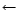 s1 + s2, that gets two source addresses, s1 and s2, (ie. two IR trees) and produces one destination address, d. The first phase of this compilation scheme, called the front-end, maps the source code into IR, and the second phase, called the back-end, maps IR into machine code. That way, for each programming language you want to compile, you write one front-end only, and for each computer architecture, you write one back-end. So, totally you have n + m components.
But the above ideal separation of compilation into two phases does not work very well for real programming languages and architectures. Ideally, you must encode all knowledge about the source programming language in the front end, you must handle all machine architecture features in the back end, and you must design your IRs in such a way that all language and machine features are captured properly.
A typical real-world compiler usually has multiple phases. This increases the compiler's portability and simplifies retargeting. The front end consists of the following phases:
A scanner groups input characters into tokens. For example, if the input is
x = x*(b+1);then the scanner generates the following sequence of tokens
id(x) = id(x) * ( id(b) + num(1) ) ;where
id(x) indicates the identifier with name x (a
program variable in this case) and num(1) indicates the integer
1. Each time the parser needs a token, it sends a request to
the scanner. Then, the scanner reads as many characters from the input
stream as it is necessary to construct a single token. The scanner
may report an error during scanning (eg, when it finds an end-of-file
in the middle of a string). Otherwise, when a single token is formed,
the scanner is suspended and returns the token to the parser. The
parser will repeatedly call the scanner to read all the tokens from
the input stream or until an error is detected (such as a syntax
error).
Tokens are typically represented by numbers. For example, the token
* may be assigned number 35. Some tokens require some extra
information. For example, an identifier is a token (so it is
represented by some number) but it is also associated with a string
that holds the identifier name. For example, the token id(x) is
associated with the string, "x". Similarly, the token
num(1) is associated with the number, 1.
Tokens are specified by patterns, called regular expressions.
For example, the regular expression [a-z][a-zA-Z0-9]*
recognizes all identifiers with at least one alphanumeric letter whose
first letter is lower-case alphabetic.
A typical scanner:
class in Java);
( and ), or
groups of special characters, such as := and ==;
#include "file"
directive in C) and macros.
A key issue is speed. One can always write a naive scanner that groups the input characters into lexical words (a lexical word can be either a sequence of alphanumeric characters without whitespaces or special characters, or just one special character), and then tries to associate a token (ie. number, keyword, identifier, etc) to this lexical word by performing a number of string comparisons. This becomes very expensive when there are many keywords and/or many special lexical patterns in the language. In this section you will learn how to build efficient scanners using regular expressions and finite automata. There are automated tools called scanner generators, such as flex for C and JLex for Java, which construct a fast scanner automatically according to specifications (regular expressions). You will first learn how to specify a scanner using regular expressions, then the underlying theory that scanner generators use to compile regular expressions into efficient programs (which are basically finite state machines), and then you will learn how to use a scanner generator for Java, called JLex.
Regular expressions are a very convenient form of representing (possibly infinite) sets of strings, called regular sets. For example, the RE (a| b)*aa represents the infinite set {``aa",``aaa",``baa",``abaa", ... }, which is the set of all strings with characters a and b that end in aa. Formally, a RE is one of the following (along with the set of strings it designates):
| name | RE | designation |
| epsilon | 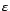 | {``"} |
| symbol | a | {``a"} for some character a |
| concatenation | AB | the set { rs| r 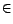 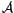, s 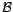 }, where rs is string |
| concatenation, and and designate the REs A and B | ||
| alternation | A| B | the set 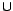 , where and designate the REs A and B |
| repetition | A* | the set 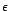| A|(AA)|(AAA)| ... (an infinite set) |
Repetition is also called Kleen closure. For example, (a| b)c designates the set { rs| r ({``a"} {``b"}), s {``c"} }, which is equal to {``ac",``bc"}.
We will use the following notational conveniences:
| P+ | = | PP* |
| P? | = | P | |
| [a - z] | = | a| b| c| ... | z |
We can freely put parentheses around REs to denote the order of evaluation. For example, (a| b)c. To avoid using many parentheses, we use the following rules: concatenation and alternation are associative (ie, ABC means (AB)C and is equivalent to A(BC)), alternation is commutative (ie, A| B = B| A), repetition is idempotent (ie, A** = A*), and concatenation distributes over alternation (eg, (a| b)c = ac| bc).
For convenience, we can give names to REs so we can refer to them by their name. For example:
| for - keyword | = | for |
| letter | = | [a - zA - Z] |
| digit | = | [0 - 9] |
| identifier | = | letter (letter | digit)* |
| sign | = | + | - | |
| integer | = | sign (0 | [1 - 9]digit*) |
| decimal | = | integer . digit* |
| real | = | (integer | decimal ) E sign digit+ |
There is some ambiguity though: If the input includes the characters
for8, then the first rule (for for-keyword) matches 3
characters (for), the fourth rule (for identifier) can
match 1, 2, 3, or 4 characters, the longest being for8. To
resolve this type of ambiguities, when there is a choice of rules,
scanner generators choose the one that matches the maximum number of
characters. In this case, the chosen rule is the one for identifier that matches 4 characters (for8). This
disambiguation rule is called the longest match rule. If there
are more than one rules that match the same maximum number of
characters, the rule listed first is chosen. This is the rule
priority disambiguation rule. For example, the lexical word
for is taken as a for-keyword even though it uses the
same number of characters as an identifier.
A DFA represents a finite state machine that recognizes a RE. For example, the following DFA:
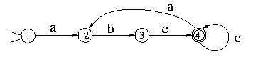
recognizes (abc+)+. A finite automaton consists of a finite set of states, a set of transitions (moves), one start state, and a set of final states (accepting states). In addition, a DFA has a unique transition for every state-character combination. For example, the previous figure has 4 states, state 1 is the start state, and state 4 is the only final state.
A DFA accepts a string if starting from the start state and moving from state to state, each time following the arrow that corresponds the current input character, it reaches a final state when the entire input string is consumed. Otherwise, it rejects the string.
The previous figure represents a DFA even though it is not complete (ie, not all state-character transitions have been drawn). The complete DFA is:
but it is very common to ignore state 0 (called the error state) since it is implied. (The arrows with two or more characters indicate transitions in case of any of these characters.) The error state serves as a black hole, which doesn't let you escape.
A DFA is represented by a transition table T, which gives the next state T[s, c] for a state s and a character c. For example, the T for the DFA above is:
| a | b | c | |
| 0 | 0 | 0 | 0 |
| 1 | 2 | 0 | 0 |
| 2 | 0 | 3 | 0 |
| 3 | 0 | 0 | 4 |
| 4 | 2 | 0 | 4 |
Suppose that we want to build a scanner for the REs:
| for - keyword | = | for |
| identifier | = | [a - z][a - z0 - 9]* |
The corresponding DFA has 4 final states: one to accept the for-keyword and 3 to accept an identifier:
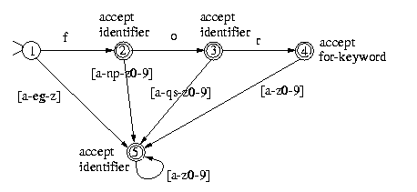
(the error state is omitted again). Notice that for each state and for each character, there is a single transition.
A scanner based on a DFA uses the DFA's transition table as follows:
state = initial_state;
current_character = get_next_character();
while ( true )
{ next_state = T[state,current_character];
if (next_state == ERROR)
break;
state = next_state;
current_character = get_next_character();
if ( current_character == EOF )
break;
};
if ( is_final_state(state) )
`we have a valid token'
else `report an error'
This program does not explicitly take into account the longest match disambiguation rule since it ends at EOF. The following program is more general since it does not expect EOF at the end of token but still uses the longest match disambiguation rule.
state = initial_state;
final_state = ERROR;
current_character = get_next_character();
while ( true )
{ next_state = T[state,current_character];
if (next_state == ERROR)
break;
state = next_state;
if ( is_final_state(state) )
final_state = state;
current_character = get_next_character();
if (current_character == EOF)
break;
};
if ( final_state == ERROR )
`report an error'
else if ( state != final_state )
`we have a valid token but we need to backtrack
(to put characters back into the input stream)'
else `we have a valid token'
Is there any better (more efficient) way to build a scanner out of a DFA? Yes! We can hardwire the state transition table into a program (with lots of gotos). You've learned in your programming language course never to use gotos. But here we are talking about a program generated automatically, which no one needs to look at. The idea is the following. Suppose that you have a transition from state s1 to s2 when the current character is c. Then you generate the program:
s1: current_character = get_next_character();
...
if ( current_character == 'c' )
goto s2;
...
s2: current_character = get_next_character();
...
The task of a scanner generator, such as JLex, is to generate the transition tables or to synthesize the scanner program given a scanner specification (in the form of a set of REs). So it needs to convert REs into a single DFA. This is accomplished in two steps: first it converts REs into a non-deterministic finite automaton (NFA) and then it converts the NFA into a DFA.
An NFA is similar to a DFA but it also permits multiple transitions over the same character and transitions over . In the case of multiple transitions from a state over the same character, when we are at this state and we read this character, we have more than one choice; the NFA succeeds if at least one of these choices succeeds. The transition doesn't consume any input characters, so you may jump to another state for free.
Clearly DFAs are a subset of NFAs. But it turns out that DFAs and NFAs have the same expressive power. The problem is that when converting a NFA to a DFA we may get an exponential blowup in the number of states.
We will first learn how to convert a RE into a NFA. This is the easy part. There are only 5 rules, one for each type of RE:
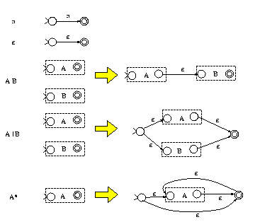
As it can been shown inductively, the above rules construct NFAs with only one final state. For example, the third rule indicates that, to construct the NFA for the RE AB, we construct the NFAs for A and B, which are represented as two boxes with one start state and one final state for each box. Then the NFA for AB is constructed by connecting the final state of A to the start state of B using an empty transition.
For example, the RE (a| b)c is mapped to the following NFA:
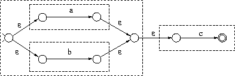
The next step is to convert a NFA to a DFA (called subset construction). Suppose that you assign a number to each NFA state. The DFA states generated by subset construction have sets of numbers, instead of just one number. For example, a DFA state may have been assigned the set {5, 6, 8}. This indicates that arriving to the state labeled {5, 6, 8} in the DFA is the same as arriving to the state 5, the state 6, or the state 8 in the NFA when parsing the same input. (Recall that a particular input sequence when parsed by a DFA, leads to a unique state, while when parsed by a NFA it may lead to multiple states.)
First we need to handle transitions that lead to other states for free (without consuming any input). These are the transitions. We define the closure of a NFA node as the set of all the nodes reachable by this node using zero, one, or more transitions. For example, The closure of node 1 in the left figure below
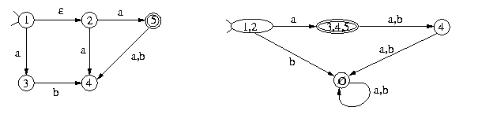
is the set {1, 2}. The start state of the constructed DFA is labeled by the closure of the NFA start state. For every DFA state labeled by some set {s1,..., sn} and for every character c in the language alphabet, you find all the states reachable by s1, s2, ..., or sn using c arrows and you union together the closures of these nodes. If this set is not the label of any other node in the DFA constructed so far, you create a new DFA node with this label. For example, node {1, 2} in the DFA above has an arrow to a {3, 4, 5} for the character a since the NFA node 3 can be reached by 1 on a and nodes 4 and 5 can be reached by 2. The b arrow for node {1, 2} goes to the error node which is associated with an empty set of NFA nodes.
The following NFA recognizes (a| b)*(abb | a+b), even though it wasn't constructed with the above RE-to-NFA rules. It has the following DFA:
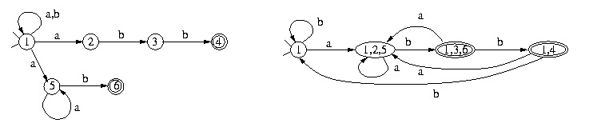
As a running example for this and the subsequent sections, we will use a simple interpreter for a calculator written in Java. If you don't have Java on your PC, you need to download Sun's J2SE SDK from http://java.sun.com/j2se/downloads.html. You also need to download
tar xfz calc.tar.gz to extract the files in the directory calc
calc/Makefile to point to your System.jar
cd calc; build
run
tar xfz calc.tar.gz
make.bat and run.bat files to point to your jar files
calc directory and do build to compile the programs
run to run the calculator
2*(3+8);, you can assign values to variables, such as
x:=3+4;, you can reference variables by name, such as
x+3;, you can define recursive functions interactively, such as
define f(n) = if n=0 then 1 else n*f(n-1);, and you can call them
using f(5);, etc. You exit using quit;.
The source files of the calculator example are given in
http://lambda.uta.edu/cse5317/calc/.
Some of these files will be explained
in detail later, but now we are ready to look at the scanner only, given
in calc.lex. The tokens, such
as sym.INT, are imported from the
parser
and will be explained
in the next section. For now, just assume that these are different constants
(integers). The order of lines is important in some cases: if we put
the rule for {ID} before the keywords, then the keywords will
never be recognized (this is the consequence of the rule priority
law). The lexical constructs that need to be skipped, such as
comments and whitespaces, should never return (we must return only
when we find a complete token).
Consider the following input string:
x+2*yWhen scanned by a scanner, it produces the following stream of tokens:
id(x) + num(2) * id(y)The goal is to parse this expression and construct a data structure (a parse tree) to represent it. One possible syntax for expressions is given by the following grammar G1:
E ::= E + T
| E - T
| T
T ::= T * F
| T / F
| F
F ::= num
| id
where E, T and F stand for expression, term, and factor respectively.
For example, the rule for E indicates that an expression E
can take one of the following 3 forms: an expression followed by the token
+ followed by a term, or an expression followed by the token
- followed by a term, or simply a term. The first rule for E is actually
a shorthand of 3 productions:
E ::= E + T E ::= E - T E ::= TG1 is an example of a context-free grammar (defined below); the symbols
E, T and F are nonterminals and should be
defined using production rules, while +, -, *, /, num, and
id are terminals (ie, tokens) produced by the scanner.
The nonterminal E is the start symbol of the grammar.
In general, a context-free grammar (CFG) has a finite set of terminals (tokens), a finite set of nonterminals from which one is the start symbol, and a finite set of productions of the form:
A ::= X1 X2 ... Xnwhere
A is a nonterminal and each Xi is either a terminal or nonterminal symbol.
Given two sequences of symbols a and b (can be any combination of terminals and nonterminals) and a production A : : = X1X2...Xn, the form aAb = > aX1X2...Xnb is called a derivation. That is, the nonterminal symbol A is replaced by the rhs (right-hand-side) of the production for A. For example,
T / F + 1 - x => T * F / F + 1 - xis a derivation since we used the production
T := T * F.
Top-down parsing starts from the start symbol of the grammar S and applies derivations until the entire input string is derived (ie, a sequence of terminals that matches the input tokens). For example,
E => E + T => E + T * F => T + T * F => T + F * F => T + num * F => F + num * F => id + num * F => id + num * idwhich matches the input sequence
id(x) + num(2) * id(y). Top
down parsing occasionally requires backtracking. For example, suppose
the we used the derivation E => E - T instead of the first
derivation. Then, later we would have to backtrack because the derived
symbols will not match the input tokens. This is true for all
nonterminals that have more than one production since it indicates
that there is a choice of which production to use. We will learn how
to construct parsers for many types of CFGs that never backtrack. These
parsers are based on a method called predictive parsing. One
issue to consider is which nonterminal to replace when there is a
choice. For example, in T + F * F we have 3 choices: we can use
a derivation for T, for the first F, or for the second
F. When we always replace the leftmost nonterminal, it is
called leftmost derivation.
In contrast to top-down parsing, bottom-up parsing starts from the input string and uses derivations in the opposite directions (ie, by replacing the rhs sequence X1X2...Xn of a production A : : = X1X2...Xn with the nonterminal A. It stops when it derives the start symbol. For example,
id(x) + num(2) * id(y) => id(x) + num(2) * F => id(x) + F * F => id(x) + T * F => id(x) + T => F + T => T + T => E + T => E
The parse tree of an input sequence according to a CFG is the
tree of derivations. For example if we used a production
A : : = X1X2...Xn (in either top-down or bottom-up parsing) then we
construct a tree with node A and children
X1X2...Xn.
For example, the parse tree of id(x) + num(2) * id(y) is:
E
/ | \
E + T
| / | \
T T * F
| | |
F F id
| |
id num
So a parse tree has non-terminals for internal nodes and terminals
for leaves.
As another example, consider the following grammar:
S ::= ( L )
| a
L ::= L , S
| S
Under this grammar,
the parse tree of the sentence
(a,((a, a), a)) is:
S
/ | \
( L )
/ | \
L , S
| / | \
S ( L )
| / | \
a L , S
| |
S a
/ | \
( L )
/ | \
L , S
| |
S a
|
a
Consider now the following grammar G2:
E ::= T + E
| T - E
| T
T ::= F * T
| F / T
| F
F ::= num
| id
This is similar to our original grammar, but it is right associative
when the leftmost derivation rules is used. That is,
x-y-z is equivalent to x-(y-z) under G2, as we can see from
its parse tree.
Consider now the following grammar G3:
E ::= E + E
| E - E
| E * E
| E / E
| num
| id
Is this grammar equivalent to our original grammar G1? Well, it
recognizes the same language, but it constructs the wrong parse trees.
For example, the x+y*z is interpreted as (x+y)*z by this
grammar (if we use leftmost derivations) and as x+(y*z) by G1
or G2. That is, both G1 and G2 grammar handle the operator
precedence correctly (since * has higher precedence than +), while
the G3 grammar does not.
In general, to write a grammar that handles precedence properly, we can start with a grammar that does not handle precedence at all, such as our last grammar G3, and then we can refine it by creating more nonterminals, one for each group of operators that have the same precedence. For example, suppose we want to parse an expression E and we have 4 groups of operators: {not}, {*,/}, { + , - }, and {and, or}, in this order of precedence. Then we create 4 new nonterminals: N, T, F, and B and we split the derivations for E into 5 groups of derivations (the same way we split the rules for E in the last grammar into 3 groups in the first grammar).
A grammar is ambiguous if it has more than one parse tree for
the same input sequence depending which derivations are applied each
time. For example, the grammar G3 is ambiguous since it has two
parse trees for x-y-z (one parses x-y first, while the
other parses y-z first). Of course, the first one is the right
interpretation since - is left associative. Fortunately, if we
always apply the leftmost derivation rule, we will never derive the
second parse tree. So in this case the leftmost derivation rule
removes the ambiguity.
The goal of predictive parsing is to construct a top-down parser that never backtracks. To do so, we must transform a grammar in two ways:
Consider this grammar:
A ::= A a
| b
It recognizes the regular expression ba*. The problem is that if we use the first
production for top-down derivation, we will fall into an infinite
derivation chain. This is called left recursion. But how else
can you express ba*? Here is an alternative way:
A ::= b A'
A' ::= a A'
|
where the third production is an empty production (ie, it is
A' ::= ). That is, A' parses the RE a*. Even though this
CFG is recursive, it is not left recursive. In general, for each
nonterminal X, we partition the productions for X into two groups:
one that contains the left recursive productions, and the other with
the rest. Suppose that the first group is:
X ::= X a1 ... X ::= X anwhile the second group is:
X ::= b1 ... X ::= bmwhere
a, b are symbol sequences.
Then we eliminate the left recursion by rewriting these rules into:
X ::= b1 X' ... X ::= bm X' X' ::= a1 X' ... X' ::= an X' X' ::=For example, the CFG G1 is transformed into:
E ::= T E'
E' ::= + T E'
| - T E'
|
T ::= F T'
T' ::= * F T'
| / F T'
|
F ::= num
| id
Suppose now that we have a number of productions for X that have a common prefix in their rhs (but without any left recursion):
X ::= a b1 ... X ::= a bnWe factor out the common prefix as follows:
X ::= a X' X' ::= b1 ... X' ::= bnThis is called left factoring and it helps predict which rule to use without backtracking. For example, the rule from our right associative grammar G2:
E ::= T + E
| T - E
| T
is translated into:
E ::= T E'
E' ::= + E
| - E
|
As another example, let L be the language of all regular expressions over the alphabet 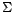 = {a, b}. That is, L = {``",``a",``b",``a*",``b*",``a| b",``(a| b)",...}. For example, the string ``a(a| b)*| b*" is a member of L. There is no RE that captures the syntax of all REs. Consider for example the RE (( ... (a) ... )), which is equivalent to the language (na)n for all n. This represents a valid RE but there is no RE that can capture its syntax. A context-free grammar that recognizes L is:
| R | : : = | R R |
| | | R ``|" R | |
| | | R * | |
| | | ( R ) | |
| | | a | |
| | | b | |
| | | ``" |
| R | : : = | ( R ) R' |
| | | a R' | |
| | | b R' | |
| | | ``" R' | |
| R' | : : = | R R' |
| | | ``|" R R' | |
| | | * R' | |
| | |
Consider the transformed CFG G1 again:
E ::= T E'
E' ::= + T E'
| - T E'
|
T ::= F T'
T' ::= * F T'
| / F T'
|
F ::= num
| id
Here is a Java program that parses this grammar:
static void E () { T(); Eprime(); }
static void Eprime () {
if (current_token == PLUS)
{ read_next_token(); T(); Eprime(); }
else if (current_token == MINUS)
{ read_next_token(); T(); Eprime(); };
}
static void T () { F(); Tprime(); }
static void Tprime() {
if (current_token == TIMES)
{ read_next_token(); F(); Tprime(); }
else if (current_token == DIV)
{ read_next_token(); F(); Tprime(); };
}
static void F () {
if (current_token == NUM || current_token == ID)
read_next_token();
else error();
}
In general, for each nonterminal we write one procedure; For each
nonterminal in the rhs of a rule, we call the nonterminal's procedure;
For each terminal, we compare the current token with the expected
terminal. If there are multiple productions for a nonterminal, we use
an if-then-else statement to choose which rule to apply.
If there was a left recursion in a production, we would have had an infinite recursion.
Please look at the following web page for a demo of the recursive descent algorithm using Java aplets: http://www.upb.de/cs/ag-kastens/uebi/parsdemo/
Predictive parsing can also be accomplished using a predictive
parsing table and a stack. It is sometimes called non-recursive
predictive parsing. The idea is that we construct a table
M[X, token] which indicates which production to use if the top of the
stack is a nonterminal X and the current token is equal to token;
in that case we pop X from the stack and we push all the rhs symbols
of the production
M[X, token] in reverse order.
We use a special symbol $ to denote the end of file.
Let S be the start symbol.
Here is the parsing algorithm:
push(S);
read_next_token();
repeat
X = pop();
if (X is a terminal or '$')
if (X == current_token)
read_next_token();
else error();
else if (M[X,current_token] == "X ::= Y1 Y2 ... Yk")
{ push(Yk);
...
push(Y1);
}
else error();
until X == '$';
Now the question is how to construct the parsing table. We need first to derive the FIRST[a] for some symbol sequence a and the FOLLOW[X] for some nonterminal X. In few words, FIRST[a] is the set of terminals t that result after a number of derivations on a (ie, a = > ... = > tb for some b). For example, FIRST[3 + E] = {3} since 3 is the first terminal. To find FIRST[E + T], we need to apply one or more derivations to E until we get a terminal at the beginning. If E can be reduced to the empty sequence, then the FIRST[E + T] must also contain the FIRST[+ T] = { + }. The FOLLOW[X] is the set of all terminals that follow X in any legal derivation. To find the FOLLOW[X], we need find all productions Z : : = aXb in which X appears at the rhs. Then the FIRST[b] must be part of the FOLLOW[X]. If b is empty, then the FOLLOW[Z] must be part of the FOLLOW[X].
Consider our CFG G1:
1) E ::= T E' $ 2) E' ::= + T E' 3) | - T E' 4) | 5) T ::= F T' 6) T' ::= * F T' 7) | / F T' 8) | 9) F ::= num 10) | id
FIRST[F] is of course {num,id}. This means that
FIRST[T]=FIRST[F]={num,id}. In addition,
FIRST[E]=FIRST[T]={num,id}. Similarly, FIRST[T'] is
{*,/} and FIRST[E'] is {+,-}.
The FOLLOW of E is {$} since there is no production that
has E at the rhs. For E', rules 1, 2, and 3 have
E' at the rhs. This means that the FOLLOW[E'] must
contain both the FOLLOW[E] and the FOLLOW[E']. The first one is
{$} while the latter is ignored since we are trying to find
E'. Similarly, to find FOLLOW[T], we find the rules that
have T at the rhs: rules 1, 2, and 3. Then FOLLOW[T]
must include FIRST[E'] and, since E' can be reduced to the empty sequence,
it must include FOLLOW[E'] too (ie, {$}). That is,
FOLLOW[T]={+,-,$}. Similarly,
FOLLOW[T']=FOLLOW[T]={+,-,$} from rule 5. The FOLLOW[F]
is equal to FIRST[T']={*,/} plus FOLLOW[T'] and plus
FOLLOW[T] from rules 5, 6, and 7, since T' can be
reduced to the empty sequence.
To summarize, we have:
| FIRST | FOLLOW | |
| E | {num,id} | {$} |
| E' | {+,-} | {$} |
| T | {num,id} | {+,-,$} |
| T' | {*,/} | {+,-,$} |
| F | {num,id} | {+,-,*,/,$} |
Now, given the above table, we can easily construct the parsing table. For each t FIRST[a], add X : : = a to M[X, t]. If a can be reduced to the empty sequence, then for each t FOLLOW[X], add X : : = a to M[X, t].
For example, the parsing table of the grammar G1 is:
| num | id | + | - | * | / | $ |
|
| E | 1 | 1 | |||||
| E' | 2 | 3 | 4 | ||||
| T | 5 | 5 | |||||
| T' | 8 | 8 | 6 | 7 | 8 | ||
| F | 9 | 10 |
where the numbers are production numbers. For example, consider the
eighth production T' : : = . Since FOLLOW[T']={+,-,$},
we add 8 to M[T',+], M[T',-], M[T',$].
A grammar is called LL(1) if each element of the parsing table of the grammar has at most one production element. (The first L in LL(1) means that we read the input from left to right, the second L means that it uses left-most derivations only, and the number 1 means that we need to look one token only ahead from the input.) Thus G1 is LL(1). If we have multiple entries in M, the grammar is not LL(1).
We will parse now the string x-2*y$ using the above parse table:
Stack current_token Rule --------------------------------------------------------------- E x M[E,id] = 1 (using E ::= T E' $) $ E' T x M[T,id] = 5 (using T ::= F T') $ E' T' F x M[F,id] = 10 (using F ::= id) $ E' T' id x read_next_token $ E' T' - M[T',-] = 8 (using T' ::= ) $ E' - M[E',-] = 3 (using E' ::= - T E') $ E' T - - read_next_token $ E' T 2 M[T,num] = 5 (using T ::= F T') $ E' T' F 2 M[F,num] = 9 (using F ::= num) $ E' T' num 2 read_next_token $ E' T' * M[T',*] = 6 (using T' ::= * F T') $ E' T' F * * read_next_token $ E' T' F y M[F,id] = 10 (using F ::= id) $ E' T' id y read_next_token $ E' T' $ M[T',$] = 8 (using T' ::= ) $ E' $ M[E',$] = 4 (using E' ::= ) $ $ stop (accept)
As another example, consider the following grammar:
G ::= S $
S ::= ( L )
| a
L ::= L , S
| S
After left recursion elimination, it becomes
0) G := S $ 1) S ::= ( L ) 2) S ::= a 3) L ::= S L' 4) L' ::= , S L' 5) L' ::=
The first/follow tables are:
| FIRST | FOLLOW | |
| G | ( a | |
| S | ( a | , ) $ |
| L | ( a | ) |
| L' | , | ) |
which are used to create the parsing table:
| ( | ) | a | , | $ | |
| G | 0 | 0 | |||
| S | 1 | 2 | |||
| L | 3 | 3 | |||
| L' | 5 | 4 |
The basic idea of a bottom-up parser is that we use grammar
productions in the opposite way (from right to left). Like for predictive
parsing with tables, here too we use a stack to push symbols. If the
first few symbols at the top of the stack match the rhs of some rule,
then we pop out these symbols from the stack and we push the lhs (left-hand-side) of
the rule. This is called a reduction. For example, if the stack
is x * E + E (where x is the bottom of stack) and there
is a rule E ::= E + E, then we pop out E + E from the
stack and we push E; ie, the stack becomes x * E. The
sequence E + E in the stack is called a handle. But
suppose that there is another rule S ::= E, then E
is also a handle in the stack. Which one to choose? Also what happens
if there is no handle? The latter question is easy to answer: we push
one more terminal in the stack from the input stream and check again
for a handle. This is called shifting. So another name for
bottom-up parsers is shift-reduce parsers. There two actions only:
A DFA though can only be used if we always have one choice for each
symbol. But this is not the case here, as it was apparent from the
previous example: there is an ambiguity in recognizing handles in the
stack. In the previous example, the handle can either be E + E
or E. This ambiguity will hopefully be resolved later when we
read more tokens. This implies that we have multiple choices and each
choice denotes a valid potential for reduction. So instead of a DFA we
must use a NFA, which in turn can be mapped into a DFA as we learned
in Section 2.3. These two steps (extracting the NFA and map
it to DFA) are done in one step using item sets (described below).
Recall the original CFG G1:
0) S :: = E $ 1) E ::= E + T 2) | E - T 3) | T 4) T ::= T * F 5) | T / F 6) | F 7) F ::= num 8) | idHere is a trace of the bottom-up parsing of the input
x-2*y$:
Stack rest-of-the-input Action --------------------------------------------------------------- 1) id - num * id $ shift 2) id - num * id $ reduce by rule 8 3) F - num * id $ reduce by rule 6 4) T - num * id $ reduce by rule 3 5) E - num * id $ shift 6) E - num * id $ shift 7) E - num * id $ reduce by rule 7 8) E - F * id $ reduce by rule 6 9) E - T * id $ shift 10) E - T * id $ shift 11) E - T * id $ reduce by rule 8 12) E - T * F $ reduce by rule 4 13) E - T $ reduce by rule 2 14) E $ shift 15) S accept (reduce by rule 0)We start with an empty stack and we finish when the stack contains the non-terminal
S only.
Every time we shift, we push the current token into the stack and read the
next token from the input sequence. When we reduce by a rule,
the top symbols of the stack (the handle) must match the rhs of the rule exactly.
Then we replace these top symbols with the lhs of the rule (a non-terminal).
For example, in the line 12 above, we reduce by rule 4 (T ::= T * F).
Thus we pop the symbols F, *, and T (in that order)
and we push T.
At each instance, the stack (from bottom to top)
concatenated with the rest of the input (the unread input) forms a valid
bottom-up derivation from the input sequence. That is, the derivation sequence here is:
1) id - num * id $ 3) => F - num * id $ 4) => T - num * id $ 5) => E - num * id $ 8) => E - F * id $ 9) => E - T * id $ 12) => E - T * F $ 13) => E - T $ 14) => E $ 15) => SThe purpose of the above example is to understand how bottom-up parsing works. It involves lots of guessing. We will see that we don't actually push symbols in the stack. Rather, we push states that represent possibly more than one potentials for rule reductions.
As we learned in earlier sections, a DFA can be represented by transition tables. In this case we use two tables: ACTION and GOTO. ACTION is used for recognizing which action to perform and, if it is shifting, which state to go next. GOTO indicates which state to go after a reduction by a rule for a nonterminal symbol. We will first learn how to use the tables for parsing and then how to construct these tables.
Consider the following grammar:
0) S ::= R $ 1) R ::= R b 2) R ::= awhich parses the R.E. ab*$.
The DFA that recognizes the handles for this grammar is: (it will be explained later how it is constructed)
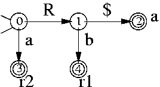
where 'r2' for example means reduce by rule 2 (ie, by R :: = a)
and 'a' means accept. The transition from 0 to 3 is done when the
current state is 0 and the current input token is 'a'. If we are in
state 0 and have completed a reduction by some rule for R (either rule
1 or 2), then we jump to state 1.
The ACTION and GOTO tables that correspond to this DFA are:
| state | action | goto | |||
| a | b | $ |
S | R | |
| 0 | s3 | 1 | |||
| 1 | s4 | s2 | |||
| 2 | a | a | a | ||
| 3 | r2 | r2 | r2 | ||
| 4 | r3 | r3 | r3 | ||
where for example s3 means shift a token into the stack and go to state 3. That is, transitions over terminals become shifts in the ACTION table while transitions over non-terminals are used in the GOTO table.
Here is the shift-reduce parser:
push(0);
read_next_token();
for(;;)
{ s = top(); /* current state is taken from top of stack */
if (ACTION[s,current_token] == 'si') /* shift and go to state i */
{ push(i);
read_next_token();
}
else if (ACTION[s,current_token] == 'ri')
/* reduce by rule i: X ::= A1...An */
{ perform pop() n times;
s = top(); /* restore state before reduction from top of stack */
push(GOTO[s,X]); /* state after reduction */
}
else if (ACTION[s,current_token] == 'a')
success!!
else error();
}
Note that the stack contains state numbers only, not symbols.
For example, for the input abb$, we have:
Stack rest-of-input Action ---------------------------------------------------------------------------- 0 abb$ s3 0 3 bb$ r2 (pop(), push GOTO[0,R] since R ::= a) 0 1 bb$ s4 0 1 4 b$ r1 (pop(), pop(), push GOTO[0,R] since R ::= R b) 0 1 b$ s4 0 1 4 $ r1 (pop(), pop(), push GOTO[0,R] since R ::= R b) 0 1 $ s2 0 1 2 accept
Now the only thing that remains to do is, given a CFG, to construct the finite automaton (DFA) that recognizes handles. After that, constructing the ACTION and GOTO tables will be straightforward.
The states of the finite state machine correspond to item sets. An
item (or configuration) is a production with a dot (.) at
the rhs that indicates how far we have progressed using this rule to
parse the input. For example, the item E ::= E + . E indicates
that we are using the rule E ::= E + E and that, using this
rule, we have parsed E, we have seen a token +, and we
are ready to parse another E. Now, why do we need a set (an item
set) for each state in the state machine? Because many production
rules may be applicable at this point; later when we will scan more
input tokens we will be able tell exactly which production to use.
This is the time when we are ready to reduce by the chosen production.
For example, say that we are in a state that corresponds to the item set with the following items:
S ::= id . := E S ::= id . : SThis state indicates that we have already parsed an
id from the input
but we have 2 possibilities: if the next token is := we will use
the first rule and if it is : we will use the second.
Now we are ready to construct our automaton. Since we do not want to
work with NFAs, we build a DFA directly. So it is important to
consider closures (like we did when we transformed NFAs to DFAs). The
closure of an item X ::= a . t b (ie, the dot appears before a
terminal t) is the singleton set that contains the item X ::= a . t b only.
The closure of an item X ::= a . Y b (ie, the dot appears before a
nonterminal Y) is the set consisting of the item itself, plus
all productions for Y with the dot at the left of the rhs, plus
the closures of these items. For example, the closure of the item
E ::= E + . T is the set:
E ::= E + . T T ::= . T * F T ::= . T / F T ::= . F F ::= . num F ::= . id
The initial state of the DFA (state 0) is the closure of the item
S ::= . a $, where S ::= a $ is the first rule. In simple words,
if there is an item X ::= a . s b in an item set, where
s is a symbol (terminal or nonterminal), we have a transition
labelled by s to an item set that contains
X ::= a s . b. But it's a little bit more complex than that:
s, say X ::= a . s b and Y ::= c . s d, then the
new item set contains both X ::= a s . b and
Y ::= c s . d.
For example, our previous grammar which parses the R.E. ab*$:
0) S ::= R $ 1) R ::= R b 2) R ::= ahas the following item sets:
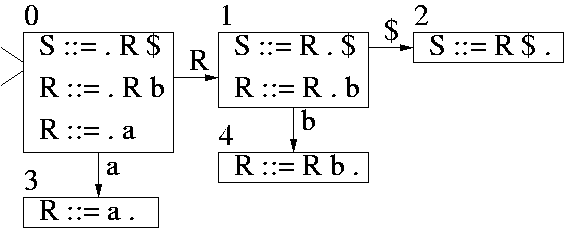
which forms the following DFA:
We can understand now the R transition: If we read an entire R term (that is, after we reduce by a rule that parses R), and the previous state before the reduction was 0, we jump to state 1.
As another example, the CFG:
1) S ::= E $ 2) E ::= E + T 3) | T 4) T ::= id 5) | ( E )has the following item sets:
I0: S ::= . E $ I4: E ::= E + T .
E ::= . E + T
E ::= . T I5: T ::= id .
T ::= . id
T ::= . ( E ) I6: T ::= ( . E )
E ::= . E + T
I1: S ::= E . $ E ::= . T
E ::= E . + T T ::= . id
T ::= . ( E )
I2: S ::= E $ .
I7: T ::= ( E . )
I3: E ::= E + . T E ::= E . + T
T ::= . id
T ::= . ( E ) I8: T ::= ( E ) .
I9: E ::= T .
that correspond to the DFA:
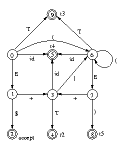
Explanation: The initial state I0 is the closure of
S ::= . E $. The two items S ::= . E $ and
E ::= . E + T in I0 must have a transition by
E since the dot appears before E. So we have a new item
set I1 and a transition from I0 to I1 by
E. The I1 item set must contain the closure of the items
S ::= . E $ and E ::= . E + T with the dot moved one
place right. Since the dot in I1 appears before terminals
($ and +), the closure is the items themselves.
Similarly, we have a transition from I0 to I9 by
T, to I5 by id, to I6 by '(', etc,
and we do the same thing for all item sets.
Now if we have an item set with only one item S ::= E ., where
S is the start symbol, then this state is the accepting state
(state I2 in the example). If we have an item set with only
one item X ::= a . (where the dot appears at the end of the rhs),
then this state corresponds to a reduction by the production
X ::= a. If we have a transition by a terminal symbol (such as
from I0 to I5 by id), then this corresponds to a
shifting.
The ACTION and GOTO tables that correspond to this DFA are:
| state | action | goto | ||||||
| id | ( | ) | + | $ |
S | E | T | |
| 0 | s5 | s6 | 1 | 9 | ||||
| 1 | s3 | s2 | ||||||
| 2 | a | a | a | a | a | |||
| 3 | s5 | s6 | 4 | |||||
| 4 | r2 | r2 | r2 | r2 | r2 | |||
| 5 | r4 | r4 | r4 | r4 | r4 | |||
| 6 | s5 | s6 | 7 | 9 | ||||
| 7 | s8 | s3 | ||||||
| 8 | r5 | r5 | r5 | r5 | r5 | |||
| 9 | r3 | r3 | r3 | r3 | r3 | |||
As another example, consider the following augmented grammar:
0) S' ::= S $ 1) S ::= B B 2) B ::= a B 3) B ::= c
The state diagram is:
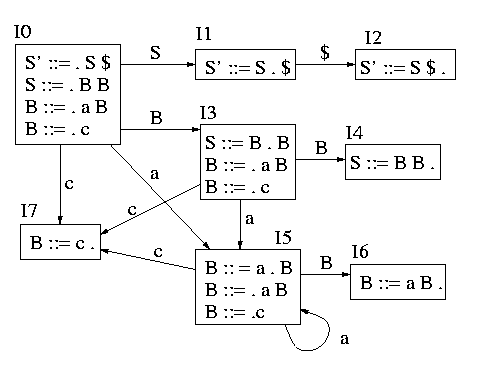
The ACTION and GOTO parsing tables are:
| state | action | goto | ||||
| a | c | $ | S' | S | B | |
| 0 | s5 | s7 | 1 | 3 | ||
| 1 | s2 | |||||
| 2 | a | a | a | |||
| 3 | s5 | s7 | 4 | |||
| 4 | r1 | r1 | r1 | |||
| 5 | s5 | s7 | 6 | |||
| 6 | r2 | r2 | r2 | |||
| 7 | r3 | r3 | r3 | |||
As yet another example, the grammar:
S ::= E $ E ::= ( L ) E ::= ( ) E ::= id L ::= L , E L ::= Ehas the following state diagram:
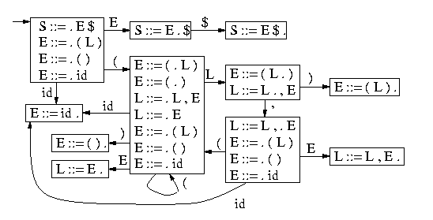
If we have an item set with more than one items with a dot at the end
of their rhs, then this is an error, called a reduce-reduce
conflict, since we can not choose which rule to use to reduce. This
is a very important error and it should never happen. Another conflict
is a shift-reduce conflict where we have one reduction and one or
more shifts at the same item set. For example, when we find b
in a+b+c, do we reduce a+b or do we shift the plus token
and reduce b+c later? This type of ambiguities is usually
resolved by assigning the proper precedences to operators (described
later). The shift-reduce conflict is not as severe as the reduce-reduce
conflict: a parser generator selects reduction against shifting but we may
get a wrong behavior. If the grammar has no reduce-reduce and no
shift-reduce conflicts, it is LR(0) (ie. we read left-to-right, we use right-most
derivations, and we don't look ahead any tokens).
Here is an example of a grammar that is not LR(0):
1) S ::= E $ 2) E ::= E + T 3) | T 4) T ::= T * F 5) | F 6) F ::= id 7) | ( E )
Let's focus on two item sets only:
I0: S ::= . E $ I1: E ::= T .
E ::= . E + T T ::= T . * F
E ::= . T
T ::= . T * F
T ::= . F
F ::= . id
F ::= . ( E )
State I1 has a shift-reduce conflict.
Another example is:
S ::= X
X ::= Y
| id
Y ::= id
which includes the following two item sets:
I0: S ::= . X $
X ::= . Y I1: X ::= id .
X ::= . id Y ::= id .
Y ::= . id
State I1 has a reduce-reduce conflict.
Can we find an easy fix for the reduce-reduce and the shift-reduce
conflicts? Consider the state I1 of the first example
above. The FOLLOW of E is {$,+,)}. We can see that
* is not in the FOLLOW[E], which means that if we could
see the next token (called the lookahead token) and this token
is *, then we can use the item T ::= T . * F to do a
shift; otherwise, if the lookahead is one of {$,+,)}, we reduce
by E ::= T. The same trick can be used in the case of a
reduce-reduce conflict. For example, if we have a state with the
items A ::= a . and B ::= b ., then if FOLLOW[A]
doesn't overlap with FOLLOW[B], then we can deduce which
production to reduce by inspecting the lookahead token. This grammar
(where we can look one token ahead) is called SLR(1) and is more
powerful than LR(0).
The previous trick is not always possible. Consider the grammar:
S ::= E $
E ::= L = R
| R
L ::= * R
| id
R ::= L
for C-style variable assignments. Consider the two states:
I0: S ::= . E $
E ::= . L = R I1: E ::= L . = R
E ::= . R R ::= L .
L ::= . * R
L ::= . id
R ::= . L
we have a shift-reduce conflict in I1. The FOLLOW of R
is the union of the FOLLOW of E and the FOLLOW of L, ie, it is
{$,=}. In this case, = is a member of the FOLLOW of
R, so we can't decide shift or reduce using just one lookahead.
An even more powerful grammar is LR(1), described below. This grammar is not used in practice because of the large number of states it generates. A simplified version of this grammar, called LALR(1), has the same number of states as LR(0) but it is far more powerful than LR(0) (but less powerful than LR(1)). It is the most important grammar from all grammars we learned so far. CUP, Bison, and Yacc recognize LALR(1) grammars.
Both LR(1) and LALR(1) check one lookahead token (they read one token
ahead from the input stream - in addition to the current token). An
item used in LR(1) and LALR(1) is like an LR(0) item but with the
addition of a set of expected lookaheads which indicate what lookahead
tokens would make us perform a reduction when we are ready to reduce
using this production rule. The expected lookahead symbols for a rule
X ::= a are always a subset or equal to FOLLOW[X]. The
idea is that an item in an itemset represents a potential for a
reduction using the rule associated with the item. But each itemset
(ie. state) can be reached after a number of transitions in the state
diagram, which means that each itemset has an implicit context, which,
in turn, implies that there are only few terminals permitted to appear
in the input stream after reducing by this rule. In SLR(1), we made
the assumption that the followup tokens after the reduction by
X ::= a are exactly equal to FOLLOW[X]. But this is too
conservative and may not help us resolve the conflicts. So the idea is
to restrict this set of followup tokens by making a more careful
analysis by taking into account the context in which the item
appears. This will reduce the possibility of overlappings in
sift/reduce or reduce/reduce conflict states. For example,
L ::= * . R, =$indicates that we have the item
L ::= * . R and that we have parsed * and will reduce by L ::= * R only
when we parse R and the next lookahead token
is either = or $ (end of file). It is very important to
note that the FOLLOW of L (equal to {$,=}) is always a
superset or equal to the expected lookaheads. The point of propagating
expected lookaheads to the items is that we want to restrict the FOLLOW
symbols so that only the relevant FOLLOW symbols would affect our
decision when to shift or reduce in the case of a shift-reduce or
reduce-reduce conflict. For example, if we have a state with two items
A ::= a ., s1 and B ::= b ., s2, where s1 and
s2 are sets of terminals, then if s1 and s2 are
not overlapping, this is not a reduce-reduce error any more, since we
can decide by inspecting the lookahead token.
So, when we construct the item sets, we also propagate the expected
lookaheads. When we have a transition from A ::= a . s b by a
symbol s, we just propagate the expected lookaheads. The
tricky part is when we construct the closures of the items. Recall
that when we have an item A ::= a . B b, where B is a
nonterminal, then we add all rules B ::= . c in the item
set. If A ::= a . B b has an expected lookahead t, then
B ::= . c has all the elements of FIRST[bt] as expected
lookaheads.
For example, consider the previous grammar:
S ::= E $
E ::= L = R
| R
L ::= * R
| id
R ::= L
Two of the LR(1) item sets are:
I0: S ::= . E $ ?
E ::= . L = R $ I1: E ::= L . = R $
E ::= . R $ R ::= L . $
L ::= . * R =$
L ::= . id =$
R ::= . L $
We always start with expected lookahead ? for the rule
S ::= E $, which basically indicates that we don't care what is
after end-of-file. The closure of L will contain both =
and $ for expected lookaheads because in E ::= . L = R
the first symbol after L is =, and in R ::= . L
(the closure of E ::= . R) we use the $ terminal for
expected lookahead propagated from E ::= . R since there is no
symbol after L. We can see that there is no shift reduce error
in I1: if the lookahead token is $ we reduce, otherwise
we shift (for =).
In LR(1) parsing, an item A ::= a, s1 is different from
A ::= a, s2 if s1 is different from s2. This
results to a large number of states since the combinations of expected
lookahead symbols can be very large. To reduce the number of states,
when we have two items like those two, instead of creating two states
(one for each item), we combine the two states into one by creating an
item A := a, s3, where s3 is the union of s1 and
s2. Since we make the expected lookahead sets larger, there is
a danger that some conflicts will have worse chances to be resolved.
But the number of states we get is the same as that for LR(0). This
grammar is called LALR(1).
There is an easier way to construct the LALR(1) item sets. Simply start by constructing the LR(0) item sets. Then we add the expected lookaheads as follows: whenever we find a new lookahead using the closure law given above we add it in the proper item; when we propagate lookaheads we propagate all of them. Sometimes when we insert a new lookahead we need to do all the lookahead propagations again for the new lookahead even in the case we have already constructed the new items. So we may have to loop through the items many times until no new lookaheads are generated. Sounds hard? Well that's why there are parser generators to do that automatically for you. This is how CUP work.
Most parsers nowdays are specified using LALR(1) grammars fed to a parser generator, such as CUP. There are few tricks that we need to know to avoid reduce-reduce and shift-reduce conflicts.
When we learned about top-down predictive parsing, we were told that left recursion is bad. For LALR(1) the opposite is true: left recursion is good, right recursion is bad. Consider this:
L ::= id , L
| id
which captures a list of ids separated by commas. If the FOLLOW of L
(or to be more precise, the expected lookaheads for L ::= id) contains
the comma token, we are in big trouble. We can use instead:
L ::= L , id
| id
Left recursion uses less stack than right recursion and it also produces left associative trees (which is what we usually want).
Some shift-reduce conflicts are very difficult to eliminate. Consider the infamous if-then-else conflict:
S ::= if E then S else S
| if E then S
| ...
Read Section 3.3 in the textbook to see how this can be eliminated.
Most shift-reduce errors though are easy to remove by assigning precedence and associativity to operators. Consider the grammar:
S ::= E $
E ::= E + E
| E * E
| ( E )
| id
| num
and four of its LALR(1) states:
I0: S ::= . E $ ?
E ::= . E + E +*$ I1: S ::= E . $ ? I2: E ::= E * . E +*$
E ::= . E * E +*$ E ::= E . + E +*$ E ::= . E + E +*$
E ::= . ( E ) +*$ E ::= E . * E +*$ E ::= . E * E +*$
E ::= . id +*$ E ::= . ( E ) +*$
E ::= . num +*$ I3: E ::= E * E . +*$ E ::= . id +*$
E ::= E . + E +*$ E ::= . num +*$
E ::= E . * E +*$
Here we have a shift-reduce error. Consider the first two items in
I3. If we have a*b+c and we parsed a*b, do we
reduce using E ::= E * E or do we shift more symbols? In the
former case we get a parse tree (a*b)+c; in the latter case we
get a*(b+c). To resolve this conflict, we can specify that
* has higher precedence than +. The precedence of a
grammar production is equal to the precedence of the rightmost token
at the rhs of the production. For example, the precedence of the
production E ::= E * E is equal to the precedence of the
operator *, the precedence of the production E ::= ( E )
is equal to the precedence of the token ), and the precedence
of the production E ::= if E then E else E is equal to the
precedence of the token else. The idea is that if the
lookahead has higher precedence than the production currently used, we
shift. For example, if we are parsing E + E using the
production rule E ::= E + E and the lookahead is *, we
shift *. If the lookahead has the same precedence as that of
the current production and is left associative, we reduce, otherwise
we shift. The above grammar is valid if we define the precedence and
associativity of all the operators. Thus, it is very important when
you write a parser using CUP or any other LALR(1) parser generator to
specify associativities and precedences for most tokens (especially
for those used as operators). Note: you can explicitly define
the precedence of a rule in CUP using the %prec directive:
E ::= MINUS E %prec UMINUSwhere
UMINUS is a pseudo-token that has higher precedence than
TIMES, MINUS etc, so that -1*2 is equal to
(-1)*2, not to -(1*2).
Another thing we can do when specifying an LALR(1) grammar for a parser generator is error recovery. All the entries in the ACTION and GOTO tables that have no content correspond to syntax errors. The simplest thing to do in case of error is to report it and stop the parsing. But we would like to continue parsing finding more errors. This is called error recovery. Consider the grammar:
S ::= L = E ;
| { SL } ;
| error ;
SL ::= S ;
| SL S ;
The special token error indicates to the parser what to do in
case of invalid syntax for S (an invalid statement). In this
case, it reads all the tokens from the input stream until it finds the
first semicolon. The way the parser handles this is to first push an
error state in the stack. In case of an error, the parser pops
out elements from the stack until it finds an error state where it can
proceed. Then it discards tokens from the input until a restart is
possible. Inserting error handling productions in the proper places
in a grammar to do good error recovery is considered very hard.
The file simple_calc.cup contains the CUP grammar for the calculator parser (without semantics actions). Notice the section that specifies the precedence and associativity of the terminals symbols:
precedence nonassoc ELSE; precedence right OR; precedence right AND; precedence nonassoc NOT; precedence left EQ, LT, GT, LE, GE, NE; precedence left PLUS, MINUS; precedence left TIMES, DIV;It lists the terminals in order of precedence, from lower to higher. Thus,
TIMES and DIV have the highest precedence. For
example, 1+3*4 is equivalent to 1+(3*4) since
TIMES has higher precedence than PLUS. In addition, the
keywords left, right, and nonassoc indicate that the operators have
left, right, or no associativity at all, respectively. This means
that 1+2+3 is equivalent to (1+2)+3, while (x and y and z)
is equivalent to (x and (y and z)). This list is
very important for helping CUP resolve shift-reduce conflicts. The
reason that we set ELSE to the lowest precendence is to resolve
the infamous if-then-else conflict: It basically means that we always
shift in case of nested if-then-elses.
Another thing to notice is that, when there is a choice, left recursion is preferred from right recursion, such as in:
expl ::= expl COMMA exp
| exp
A grammar for a language specifies a recognizer for this language: if the input satisfies the grammar rules, it is accepted, otherwise it is rejected. But we usually want to perform semantic actions against some pieces of input recognized by the grammar. For example, if we are building a compiler, we want to generate machine code. The semantic actions are specified as pieces of code attached to production rules. For example, the CUP productions:
E ::= E:e1 + E:e2 {: RESULT = e1 + e2; :}
| E:e1 - E:e2 {: RESULT = e1 - e2; :}
| num:n {: RESULT = n; :}
;
contain pieces of Java code (enclosed by {: :}) to be executed
at a particular point of time. Here, each expression E is
associated with an integer. The goal is to calculate the value of
E stored in the variable RESULT. For example, the first
rule indicates that we are reading one expression E and call
its result e1, then we read a +, then we read another
E and call its result e2, and then we are executing the
Java code {: RESULT = e1 + e2; :}. The code can appear at any
point of the rhs of a rule (even at the beginning of the rhs of the
rule) and we may have more than one (or maybe zero) pieces of code in
a rule. The code is executed only when all the symbols at the left of
the code in the rhs of the rule have been processed.
It is very uncommon to build a full compiler by adding the appropriate actions to productions. It is highly preferable to build the compiler in stages. So a parser usually builds an Abstract Syntax Tree (AST) and then, at a later stage of the compiler, these ASTs are compiled into the target code. There is a fine distinction between parse trees and ASTs. A parse tree has a leaf for each terminal and an internal node for each nonterminal. For each production rule used, we create a node whose name is the lhs of the rule and whose children are the symbols of the rhs of the rule. An AST on the other hand is a compact data structure to represent the same syntax regardless of the form of the production rules used in building this AST.
When building ASTs, it's a good idea to define multiple classes
to capture various families of constructs. For example, we
can have an Exp class to represent expressions, Stmt class to
represent statements, and Type class to represent types.
Here is an example of Exp in Java:
abstract class Exp {
}
class IntegerExp extends Exp {
public int value;
public IntegerExp ( int n ) { value=n; }
}
class TrueExp extends Exp {
public TrueExp () {}
}
class FalseExp extends Exp {
public FalseExp () {}
}
class VariableExp extends Exp {
public String value;
public VariableExp ( String n ) { value=n; }
}
class BinaryExp extends Exp {
public String operator;
public Exp left;
public Exp right;
public BinaryExp ( String o, Exp l, Exp r ) { operator=o; left=l; right=r; }
}
class UnaryExp extends Exp {
public String operator;
public Exp operand;
public UnaryExp ( String o, Exp e ) { operator=o; operand=e; }
}
class ExpList {
public Exp head;
public ExpList next;
public ExpList ( Exp h, ExpList n ) { head=h; next=n; }
}
class CallExp extends Exp {
public String name;
public ExpList arguments;
public CallExp ( String nm, ExpList s ) { name=nm; arguments=s; }
}
class ProjectionExp extends Exp {
public Exp value;
public String attribute;
public ProjectionExp ( Exp v, String a ) { value=v; attribute=a; }
}
class RecordElements {
public String attribute;
public Exp value;
public RecordElements next;
public RecordElements ( String a, Exp v, RecordElements el )
{ attribute=a; value=v; next=el; }
}
class RecordExp extends Exp {
public RecordElements elements;
public RecordExp ( RecordElements el ) { elements=el; }
}
For example,
new BinaryExp("+",new BinaryExp("-",new VariableExp("x"),new IntegerExp(2)),
new IntegerExp(3))
constructs the AST for the input (x-2)+3.
The previous example of expression ASTs can be written as follows in C:
typedef struct Exp {
enum { int_exp, true_exp, false_exp, variable_exp,
binary_op, unary_op, function_call,
record_construction, projection } tag;
union { int integer;
string variable;
struct { string oper;
struct Exp* left;
struct Exp* right; } binary;
struct { string oper;
struct Exp* uexp; } unary;
struct { string name;
struct Exp_list* arguments; } call;
struct rec { string attribute;
struct Exp* value;
struct rec* next; } record;
struct { struct Exp* value;
string attribute; } project;
} op;
} ast;
where Exp_list is a list of ASTs:
typedef struct Exp_list {
ast* elem;
struct Exp_list* next;
} ast_list;
It's a good idea to define a constructor for every kind of expression
to simplify the task of constructing ASTs:
ast* make_binary_op ( string oper, ast* left, ast* right ) {
ast* e = (ast*) malloc(sizeof(ast));
e->tag = binary_op;
e->op.binary.oper = make_string(oper);
e->op.binary.left = left;
e->op.binary.right = right;
return e;
};
For example,
make_binary_op("+",make_binary_op("-",make_variable("x"),make_integer(2)),
make_integer(3))
constructs the AST for the input (x-2)+3.
Unfortunately, when constructing a compiler, we need to define many tree-like data structures to capture ASTs for many different constructs, such as expressions, statements, declarations, programs etc, as well as type structures, intermediate representation (IR) trees, etc. This would require hundreds of recursive structs in C or classes in Java. An alternative method is to use just one generic tree structure to capture all possible tree structures. This is exactly what we did for our calculator example and is described in detail below.
The code for the calculator example is written in Gen. Gen is a Java preprocessor that adds syntactic constructs to the Java language to make the task of handling Abstract Syntax Trees (ASTs) easier. The class project will be developed using Gen.
Two classes are used by Gen, which are defined in
Ast.java:
the class Ast that captures an AST (with subclasses Variable, Number,
Real, Astring, and Node), and the class Arguments that captures
a list of ASTs.
An Ast is a tree-like data structure, which is used for representing
various tree-like data structures used in compiler construction, including ASTs and Intermediate
Representation (IR) code.
abstract class Ast {
}
class Number extends Ast {
public long value;
public Number ( long n ) { value = n; }
}
class Real extends Ast {
public double value;
public Real ( double n ) { value = n; }
}
class Variable extends Ast {
public String value;
public Variable ( String s ) { value = s; }
}
class Astring extends Ast {
public String value;
public Astring ( String s ) { value = s; }
}
class Node extends Ast {
public String name;
public Arguments args;
public Node ( String n, Arguments a ) { tag = n; args = a; }
}
where the Arguments class represents a list of ASTs:
class Arguments {
public Ast head;
public Arguments tail;
public Arguments ( Ast h, Arguments t );
public final static Arguments nil;
public Arguments append ( Ast e );
}
See the file Ast.java
for
a complete definition.
For example, the Java expression
new Node("Binop",
Arguments.nil.append(new Variable("Plus"))
.append(new Variable("x"))
.append(new Node("Binop",
Arguments.nil.append(new Variable("Minus"))
.append(new Variable("y"))
.append(new Variable("z")))))
constructs the AST Binop(Plus,x,Binop(Minus,y,z)).
The nice thing about this approach is that we do not need to add a new class to define another tree-like data structure. The disadvantage is that it's now easier to make mistakes when writing programs to manipulate these tree structures. For example, we may pass a statement tree in a procedure that handles expression trees and this will not be detected by the Java compiler.
To make the task of writing these
tree constructions less tedious, Gen extends Java with the syntactic form
#< >. For example, #<Binop(Plus,x,Binop(Minus,y,z))> is equivalent
to the above Java expression. That is, the text within the brackets #< >
is used by Gen to generate Java code, which creates the tree-like form
(an instance of the class Ast)
that represents this text. Values of the class Ast
can be included into the form generated by the #< > brackets by ``escaping"
them with a backquote character (`). The operand of the escape operator (the backquote operator)
is expected to be an expression of type Ast that provides the value to ``fill in"
the hole in the bracketed text at that point (actually, an escaped string/int/double is
also lifted to an Ast).
For example, in
Ast x = #<join(a,b,p)>; Ast y = #<select(`x,q)>; Ast z = #<project(`y,A)>;
y is set to #<select(join(a,b,p),q)> and
z to #<project(select(join(a,b,p),q),A)>.
There is also bracketed syntax, #[ ], for constructing instances of Arguments.
The bracketed syntax has the following BNF:
bracketed ::= "#<" expr ">" an AST construction
| "#[" arg "," ... "," arg "]" an Arguments construction
expr ::= name the representation of a variable name
| integer the repr. of an integer
| real the repr. of a real number
| string the repr. of a string
| "`" name escaping to the value of \verb@name@
| "`(" code ")" escaping to the value of \verb@code@
| name "(" arg "," ... "," arg ")" the repr. of an AST node with zero or more children
| "`" name "(" arg "," ... "," arg ")" the repr. of an AST node with escaped name
| expr opr expr an AST node that represents a binary infix operation
| "`" name "[" expr "]" variable substitution (explained later)
arg ::= expr the repr. of an expression
| "..." name escaping to a list of ASTs bound to \verb@name@
| "...(" code ")" escaping to a list of ASTs returned by \verb@code@
where code is any Java code.
The #< `(code) > embeds the value returned by the Java code code of type
Ast to the term representation inside the brackets.
For example, #<`f(6,...r,g("ab",`(k(x))),`y)> is equivalent to the
following Java code:
new Node(f,
Arguments.nil.append(new Number(6))
.append(r)
.append(new Node("g",Arguments.nil.append(new Astring("ab"))
.append(k(x))))
.append(y)
If f="h", y=#<m(1,"a")>, and k(x)
returns the value #<8>, then the above term is equivalent to
#<h(6,g("ab",8),m(1,"a"))>.
The three dots (...) construct is used to indicate a list of children in an AST node.
Since this list is an instance of the class Arguments,
the type of name in ...name is also Arguments.
For example, in
Arguments r = #[join(a,b,p),select(c,q)]; Ast z = #<project(...r)>;
z will be bound to #<project(join(a,b,p),select(c,q))>.
Gen provides a case statement syntax with patterns. Patterns match the
Ast representations with similar shape. Escape operators
applied to variables inside these patterns represent variable patterns, which
``bind" to corresponding subterms upon a successful match.
This capability makes it particularly easy to write functions
that perform source-to-source transformations. A function that simplifies
arithmetic expressions can be expressed easily as:
Ast simplify ( Ast e ) {
#case e
| plus(`x,0) => return x;
| times(`x,1) => return x;
| times(`x,0) => return #<0>;
| _ => return e;
#end;
}
where the _ pattern matches any value.
For example, simplify(#<times(z,1)>) returns #<z>,
since times(z,1) matches the second case pattern. The BNF of the case
statement is:
case_stmt ::= "#case" code case ... case "#end"
case ::= "|" expr guard "=>" code
guard ::= ":" code an optional condition
|
expr ::= name exact match with a variable name
| integer exact match with an integer
| real exact match with a real number
| string exact match with a string
| "`" name match with the value of \verb@name@
| "`(" code ")" match with the value of \verb@code@
| name "(" arg "," ... "," arg ")" match with an AST node with zero or more children
| "`" name "(" arg "," ... "," arg ")" match with an AST node with escaped name
| expr opr expr an AST node that represents a binary infix operation
| "`" name "[" expr "]" second-order matching (explained later)
| "_" match any Ast
arg ::= expr match with an Ast
| "..." name match with a list of ASTs bound to \verb@name@
| "...(" code ")" match with a list of ASTs returned by \verb@code@
| "..." match the rest of the arguments
For example, the pattern `f(...r) matches any Ast Node: when it is matched with
#<join(a,b,c)>, it binds f to the string "join"
and r to the Arguments #[a,b,c].
Another example is the following function that adds the terms #<8> and #<9>
as children to any Node e:
Ast add_arg ( Ast e ) {
#case e
| `f(...r) => return #<`f(8,9,...r)>;
| `x => return x;
#end;
}
As another example of a case statement in Gen, consider the following function, which
switches the inputs of a binary join found as a parameter to a
Node e:
Ast switch_join_args ( Ast e ) {
#case e
| `f(...r,join(`x,`y),...s) => return #<`f(...r,join(`y,`x),...s)>;
| `x => return x;
#end;
}
The most powerful construct in Gen is second-order pattern
matching, denoted by the special syntax `f[expr]. When
`f[expr] is matched against an Ast, e, it
traverses the entire tree representation of e (in preorder)
until it finds a tree node that matches the pattern expr. It
fails when it does not find a match. When it finds a match, it
succeeds and binds the variables in the pattern expr.
Furthermore, it binds the variable f to a list of Ast (of
class Arguments) that represents the path from the root Ast to the Ast
node that matched the pattern. This is best used in conjuction with
the bracketed expression `f[e], which uses the path bound in
f to construct a new Ast with expr replaced with
e. For example, the Gen program
Ast n = new_name(); #case e | `f[join(`x,`y)] => return #<let(`n,join(`x,`y),`f[`n])>; #end;extracts the first term that matches a join from the term
e and
it pulls the term out in a let-binding.
Another syntactic construct in Gen is a for-loop that iterates over Arguments:
"#for" name "in" code "do" code "#end"For example,
#for v in #[a,b,c] do System.out.println(v); #end;
Let's consider now how actions are evaluated by different parsers. In recursive descent parsers, actions are pieces of code embedded in the recursive procedures. For the following grammar:
E ::= T E'
E' ::= + T E'
| - T E'
|
T ::= num
we have the following recursive descent parser:
int E () { return Eprime(T()); };
int Eprime ( int left ) {
if (current_token=='+') {
read_next_token();
return Eprime(left + T());
} else if (current_token=='-') {
read_next_token();
return Eprime(left - T());
} else return left;
};
int T () {
if (current_token=='num') {
read_next_token();
return num_value;
} else error();
};
By passing T() as input to Eprime, we pass the left operand to Eprime.
Table-driven predictive parsers use the parse stack to push/pop actions (along with symbols) but they use a separate semantic stack to execute the actions. In that case, the parsing algorithm becomes:
push(S);
read_next_token();
repeat
X = pop();
if (X is a terminal or '$')
if (X == current_token)
read_next_token();
else error();
else if (X is an action)
perform the action;
else if (M[X,current_token] == "X ::= Y1 Y2 ... Yk")
{ push(Yk);
...
push(Y1);
}
else error();
until X == '$';
For example, suppose that pushV and popV are the
functions to manipulate the semantic stack. The following is the grammar of
an interpreter that uses the semantic stack to perform additions and
subtractions:
E ::= T E' $ { print(popV()); }
E' ::= + T { pushV(popV() + popV()); } E'
| - T { pushV(-popV() + popV()); } E'
|
T ::= num { pushV(num); }
For example, for 1+5-2, we have the following sequence of actions:
pushV(1); pushV(5); pushV(popV()+popV()); pushV(3); pushV(-popV()+popV()); print(popV());Question: what would happen if we put the action of the second rule at the end of rhs?
In contrast to top-down parsers, bottom-up parsers can only perform an action after a reduction (ie, after the entire rhs of a rule has been processed). Why? because at a particular instance of time we may have a potential for multiple rules for reduction (this is the idea behind itemsets), which means that we may be in the middle of many rules at a time, but later only one rule will actually be used; so, we can't execute an action in the middle of a rule because we may have to undo it later if the rule is not used for reduction. This means that we can only have rules of the form
X ::= Y1 ... Yn { action }
where the action is always at the end of the rule. This action is
evaluated after the rule X ::= Y1 ... Yn is reduced. To
evaluate actions, in addition to state numbers, the parser pushes
values into the parse stack: Both terminals and non-terminals are
associated with typed values, which in the CUP parser generator are
instances of the Object class (or of some subclass of the Object
class). Since the Java Object class is a superclass of all classes,
it doesn't carry any additional information, but the subclasses of
Object, such as the class Integer, the class String, and the class Ast
for ASTs, do. The value associated with a terminal is in most cases
an Object, except for an identifier which is a String, for an integer
which is an Integer, etc. The typical values associated with
non-terminals in a compiler are ASTs, lists of ASTs, etc.
In CUP, you can retrieve the value of a symbol s at the lhs of a rule by using the
notation s:x, where @x@ is a variable name that hasn't appeared
elsewhere in this rule. The value of the non-terminal defined by a rule
is called RESULT and should always be assigned a value in the action.
For example, if the non-terminal E is associated with an integer value
(of type Integer), then the following rule:
E ::= E:n PLUS E:m {: RESULT = n+m; :}
retrieves the value, n, of the left operand from the parse
stack, retrieves the value, m, of the right operand from the
parse stack, and pushes the value of RESULT on the parse stack,
which has been set to n+m after the reduction of the rule. That
is, the elements of the parser stack in CUP are pairs of a
state-number (integer) and an Object. So when the above rule is
reduced, the three top elements of the stack, which form the handle of
the reduction, will contain three elements: the state reached when we
reduced the rule for E to get the left operand, the state for
shifting over PLUS, and the state reached when we reduced the
rule for E to get the right operand (top of stack). Along with
these states, there are three Objects: one bound to n, one
ignored (since the terminal PLUS is associated with an empty
Object, which is ignored), and one bound to m (top of stack).
When we reduce by the above rule, we use the GOTO table to find which
state to push, we pop the handle (three elements), and we push the
pair of this state and the RESULT value on the parse stack.
If we want build an AST in CUP, we need to associate each
non-terminal symbol with an AST type. For example, if we use the non-terminals
exp and expl for expressions and list of expressions respectively, we can
define their types as follows:
non terminal Ast exp; non terminal Arguments expl;Then the production rules should have actions to build ASTs:
exp ::= exp:e1 PLUS exp:e2 {: RESULT = new Node(plus_exp,e1,e2); :}
| exp:e1 MINUS exp:e2 {: RESULT = new Node(minus_exp,e1,e2); :}
| id:nm LP expl:el RP {: RESULT = new Node(call_exp,el.reverse()
.cons(new Variable(nm))); :}
| INT:n {: RESULT = new Number(n.intValue()); :}
;
expl ::= expl:el COMMA exp:e {: RESULT = el.cons(e); :}
| exp:e {: RESULT = nil.cons(e); :}
;
That is, for integer addition, we build an AST node that corresponds to
a binary operation (see the AST in Section 4).
What if we want to put an action in the middle of the rhs of a rule in a bottom-up parser? In that case we use a dummy nonterminal, called a marker. For example,
X ::= a { action } b
is equivalent to
X ::= M b
M ::= a { action }
This is done automatically by the CUP parser generator (ie, we can actually
put actions in the middle of a rhs of a rule and CUP will use
the above trick to put it at the end of a rule). There is a danger
though that the resulting rules may introduce new shift/reduce or
reduce/reduce conflicts.
After ASTs have been constructed, the compiler must check whether the
input program is type-correct. This is called type checking and
is part of the semantic analysis. During type checking, a compiler
checks whether the use of names (such as variables, functions, type
names) is consistent with their definition in the program. For
example, if a variable x has been defined to be of type
int, then x+1 is correct since it adds two integers while
x[1] is wrong. When the type checker detects an inconsistency,
it reports an error (such as ``Error: an integer was expected").
Another example of an inconsistency is calling a function with fewer or
more parameters or passing parameters of the wrong type.
Consequently, it is necessary to remember declarations so that we can
detect inconsistencies and misuses during type checking. This is the
task of a symbol table. Note that a symbol table is a
compile-time data structure. It's not used during run time by statically typed
languages. Formally, a symbol table maps names into
declarations (called attributes), such as mapping the
variable name x to its type int. More specifically,
a symbol table stores:
typedef int* mytype, it maps the name mytype to a data structure
that represents the type int*).
One convenient data structure for symbol tables is a hash table. One organization of a hash table that resolves conflicts is chaining. The idea is that we have list elements of type:
class Symbol {
public String key;
public Object binding;
public Symbol next;
public Symbol ( String k, Object v, Symbol r ) { key=k; binding=v; next=r; }
}
to link key-binding mappings.
Here a binding is any Object, but it can be more specific (eg, a Type
class to represent a type or a Declaration class, as we will see below). The hash table is a vector
Symbol[] of size SIZE, where SIZE is a prime
number large enough to have good performance for medium size programs
(eg, SIZE=109). The hash function must map any key (ie. any
string) into a bucket (ie. into a number between 0 and SIZE-1).
A typical hash function is, h(key) = num(key) mod SIZE,
where num converts a key to an integer and mod is the modulo operator.
In the beginning, every bucket is null. When we insert a new mapping
(which is a pair of key-binding), we calculate the bucket location by
applying the hash function over the key, we insert the key-binding
pair into a Symbol object, and we insert the object at
the beginning of the bucket list. When we want to find the binding of
a name, we calculate the bucket location using the hash function, and
we search the element list of the bucket from the beginning to its end
until we find the first element with the requested name.
Consider the following Java program:
1) {
2) int a;
3) {
4) int a;
5) a = 1;
6) };
7) a = 2;
8) };
The statement a = 1 refers to the second integer a, while
the statement a = 2 refers to the first. This is called
a nested scope in programming languages. We need to modify the
symbol table to handle structures and we need to implement the following operations
for a symbol table:
insert ( String key, Object binding )
Object lookup ( String key )
begin_scope ()
end_scope ()
We have already seen insert and lookup. When we have a new block
(ie, when we encounter the token {), we begin a new
scope. When we exit a block (ie. when we encounter the token
}) we remove the scope (this is the end_scope). When we
remove a scope, we remove all declarations inside this scope. So
basically, scopes behave like stacks. One way to implement these
functions is to use a stack of numbers (from 0 to SIZE) that
refer to bucket numbers. When we begin a new scope we push a special
marker to the stack (eg, -1). When we insert a new declaration in
the hash table using insert, we also push the bucket number to
the stack. When we end a scope, we pop the stack until and including
the first -1 marker. For each bucket number we pop out from the stack,
we remove the head of the binding list of the indicated bucket number.
For example, for the previous C program, we have the following
sequence of commands for each line in the source program (we assume that
the hash key for a is 12):
1) push(-1) 2) insert the binding from a to int into the beginning of the list table[12] push(12) 3) push(-1) 4) insert the binding from a to int into the beginning of the list table[12] push(12) 6) pop() remove the head of table[12] pop() 7) pop() remove the head of table[12] pop()Recall that when we search for a declaration using lookup, we search the bucket list from the beginning to the end, so that if we have multiple declarations with the same name, the declaration in the innermost scope overrides the declaration in the outer scope.
The textbook makes an improvement to the above data structure for
symbol tables by storing all keys (strings) into another data
structure and by using pointers instead of strings for keys in the
hash table. This new data structure implements a set of strings
(ie. no string appears more than once). This data structure too can be
implemented using a hash table. The symbol table itself uses the
physical address of a string in memory as the hash key to locate the
bucket of the binding. Also the key component of element is a
pointer to the string. The idea is that not only we save space, since
we store a name once regardless of the number of its occurrences in a program,
but we can also calculate the bucket location very fast.
A typechecker is a function that maps an AST that represents an
expression into its type. For example, if variable x is an
integer, it will map the AST that represents the expression x+1
into the data structure that represents the type int. If there
is a type error in the expression, such as in x>"a", then it
displays an error message (a type error). So before we describe the
typechecker, we need to define the data structures for types. Suppose
that we have five kinds of types in the language: integers, booleans,
records, arrays, and named types (ie. type names that have been
defined earlier by some typedef). Then one possible data structure for
types is:
abstract class Type {
}
class IntegerType extends Type {
public IntegerType () {}
}
class BooleanType extends Type {
public BooleanType () {}
}
class NamedType extends Type {
public String name;
public NamedType ( String n ) { value=n; }
}
class ArrayType extends Type {
public Type element;
public ArrayType ( Type et ) { element=et; }
}
class RecordComponents {
public String attribute;
public Type type;
public RecordComponents next;
public RecordComponents ( String a, Type t, RecordComponents el )
{ attribute=a; type=t; next=el; }
}
class RecordType extends Type {
public RecordComponents elements;
public RecordType ( RecordComponents el ) { elements=el; }
}
that is, if the type is an integer or a boolean, there are no extra
components. If it is a named type, we have the name of the type. If it
is an array, we have the type of the array elements (assuming that the
size of an array is unbound, otherwise we must include the array
bounds). If it is a record, we have a list of attribute/types (the
RecordComponents class) to capture the record components.
The symbol table must contain type declarations (ie. typedefs),
variable declarations, constant declarations, and function signatures.
That is, it should map strings (names) into Declaration objects:
abstract class Declaration {
}
class TypeDeclaration extends Declaration {
public Type declaration;
public TypeDeclaration ( Type t ) { declaration=t; }
}
class VariableDeclaration extends Declaration {
public Type declaration;
public VariableDeclaration ( Type t ) { declaration=t; }
}
class ConstantDeclaration extends Declaration {
public Type declaration;
public Exp value;
public ConstantDeclaration ( Type t, Exp v ) { declaration=t; value=v; }
}
class TypeList {
public Type head;
public TypeList next;
public TypeList ( Type h, TypeList n ) { head=h; next=n; }
}
class FunctionDeclaration extends Declaration {
public Type result;
public TypeList parameters;
public FunctionDeclaration ( Type t, TypeList tl ) { result=t; parameters=tl; }
}
If we use the hash table with chaining implementation, the symbol
table symbol_table would look like this:
class Symbol {
public String key;
public Declaration binding;
public Symbol next;
public Symbol ( String k, Declaration v, Symbol r )
{ key=k; binding=v; next=r; }
}
Symbol[] symbol_table = new Symbol[SIZE];
Recall that the symbol table should support the following operations:
insert ( String key, Declaration binding ) Declaration lookup ( String key ) begin_scope () end_scope ()
The typechecking function may have the following signature:
static Type typecheck ( Exp e );The function
typecheck must be recursive since the AST structure is
recursive. In fact, this function is a tree traversals that checks
each node of the AST tree recursively. The body of the typechecker
may look like this:
static Type typecheck ( Exp e ) {
if (e instanceof IntegerExp)
return new IntegerType();
else if (e instanceof TrueExp)
return new BooleanType();
else if (e instanceof FalseExp)
return new BooleanType();
else if (e instanceof VariableExp) {
VariableExp v = (VariableExp) e;
Declaration decl = lookup(v.value);
if (decl == null)
error("undefined variable");
else if (decl instanceof VariableDeclaration)
return ((VariableDeclaration) decl).declaration;
else error("this name is not a variable name");
} else if (e instanceof BinaryExp) {
BinaryExp b = (BinaryExp) e;
Type left = typecheck(b.left);
Type right = typecheck(b.right);
switch ( b.operator ) {
case "+": if (left instanceof IntegerType
&& right instanceof IntegerType)
return new IntegerType();
else error("expected integers in addition");
...
}
} else if (e instanceof CallExp) {
CallExp c = (CallExp) e;
Declaration decl = lookup(c.name);
if (decl == null)
error("undefined function");
else if (!(decl instanceof FunctionDeclaration))
error("this name is not a function name");
FunctionDeclaration f = (FunctionDeclaration) decl;
TypeList s = f.parameters;
for (ExpList r=c.arguments; r!=null && s!=null; r=r.next, s=s.next)
if (!equal_types(s.head,typecheck(r.head)))
error("wrong type of the argument in function call")
if (r != null || s != null)
error("wrong number of parameters");
return f.result;
}
else ...
}
where equal_types(x,y) checks the types x and y
for equality. We have two types of type equality: type equality based
on type name equivalence, or based on structural equivalence. For
example, if we have defined T to be a synonym for the type
int and have declared the variable x to be of type
T, then using the first type of equality, x+1 will cause a
type error (since T and int are different names), while
using the second equality, it will be correct.
Note also that since most realistic languages support many binary and unary operators, it will be very tedious to hardwire their typechecking into the typechecker using code. Instead, we can use another symbol table to hold all operators (as well as all the system functions) along with their signatures. This also makes the typechecker easy to change.
In Section 4.3, we described Gen used in constructing ASTs for the calculator example. We are now ready to go back to the calculator parser calc.gen to see how ASTs are constructed. Most nonterminals and some terminals have a type:
terminal String ID; terminal Integer INT; terminal Float REALN; terminal String STRINGT; non terminal Ast exp, string, name; non terminal Arguments expl, names; non terminal item, prog;For example, each production for the nonterminal
exp
constructs a value of type Ast when is reduced. For example,
the following line in the calculator parser:
| exp:e1 PLUS exp:e2 {: RESULT = #<plus_exp(`e1,`e2)>; :}
constructs a new Ast for exp when the rule is reduced.
This Ast, which is assigned to the variable RESULT, is a
tree node with label plus_exp and two children, e1 and
e2, which correspond to the Asts of the plus operands.
Recall that our calculator is an interpreter, rather than a compiler.
The symbol table of an interpreter must bind each program variable
to both its type and its value. For example, when the interpret
encounters the variable x in a program, it must assert the type
of x (eg, an integer) so it can tell if x is used
correctly in the program. It also needs the value of x because
it needs to evaluate x. A compiler would only need the type of
x. Fortunately, our calculator has only one type: double
floating points. So there is no need for type information since
everything is expected to be (or be able to be converted to) a
floating point. The calculator symbol table
is an instance of the class SymbolTable given in
SymbolTable.java.
It is a hash table with items of type SymbolCell:
class SymbolCell {
String name;
Ast binding;
SymbolCell next;
SymbolCell ( String n, Ast v, SymbolCell r ) { name=n; binding=v; next=r; }
}
The binding is the actual value of the symbol, not its type. If we
had multiple types, we should have had another attribute type
of type Ast in Symbol. The binding plays two roles: if
the name is a variable name, then the binding is the actual
value (a double floating point number) represented by a
Real AST node. If the name is a function
definition, then the binding is the AST of the actual definition.
To implement variable scoping, a scope stack is used as it is
described in the previous section. The special marker -1 in the scope
stack indicates a new scope. All the other entries are locations in
the symbol table.
The interpreter code is given in
Eval.gen.
Function eval evaluates the AST e using the symbol table
st and returns a double floating point number. When a variable
is encountered, its value is retrieved from the symbol table. A
function call can be either a primitive operation, such as an integer
addition, or a call to a defined function. In either case, the
function arguments must be evaluated before the operation/call is
performed. The function call is performed by creating a new scope,
binding the functions' formal parameters to the evaluated call
arguments, and evaluating the function body using the new scope. After
the call, the function scope is popped out.
An executable program generated by a compiler will have the following organization in memory on a typical architecture (such as on MIPS):
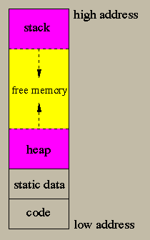
This is the layout in memory of an executable program. Note that in a virtual memory architecture (which is the case for any modern operating system), some parts of the memory layout may in fact be located on disk blocks and they are retrieved in memory by demand (lazily).
The machine code of the program is typically located at the
lowest part of the layout. Then, after the code, there is a section
to keep all the fixed size static data in the program. The dynamically
allocated data (ie. the data created using malloc in C) as well
as the static data without a fixed size (such as arrays of variable
size) are created and kept in the heap. The heap grows from low to
high addresses. When you call malloc in C to create a
dynamically allocated structure, the program tries to find an empty
place in the heap with sufficient space to insert the new data; if it
can't do that, it puts the data at the end of the heap and increases
the heap size.
The focus of this section is the stack in the memory layout. It is called the run-time stack. The stack, in contrast to the heap, grows in the opposite direction (upside-down): from high to low addresses, which is a bit counterintuitive. The stack is not only used to push the return address when a function is called, but it is also used for allocating some of the local variables of a function during the function call, as well as for some bookkeeping.
Lets consider the lifetime of a function call. When you call a function you not only want to access its parameters, but you may also want to access the variables local to the function. Worse, in a nested scoped system where nested function definitions are allowed, you may want to access the local variables of an enclosing function. In addition, when a function calls another function, we must forget about the variables of the caller function and work with the variables of the callee function and when we return from the callee, we want to switch back to the caller variables. That is, function calls behave in a stack-like manner. Consider for example the following program:
procedure P ( c: integer )
x: integer;
procedure Q ( a, b: integer )
i, j: integer;
begin
x := x+a+j;
end;
begin
Q(x,c);
end;
At run-time, P will execute the statement x := x+a+j in
Q. The variable a in this statement comes as a
parameter to Q, while j is a local variable in Q
and x is a local variable to P. How do we organize the
runtime layout so that we will be able to access all these variables
at run-time? The answer is to use the run-time stack.
When we call a function f, we push a new activation
record (also called a frame) on the run-time stack, which is
particular to the function f. Each frame can occupy many
consecutive bytes in the stack and may not be of a fixed
size. When the callee function returns to the caller, the activation
record of the callee is popped out. For example, if the main program
calls function P, P calls E, and E calls
P, then at the time of the second call to P, there will
be 4 frames in the stack in the following order: main,
P, E, P
Note that a callee should not make any assumptions about who is the
caller because there may be many different functions that call the
same function. The frame layout in the stack should reflect this.
When we execute a function, its frame is located on top of the stack.
The function does not have any knowledge about what the previous
frames contain. There two things that we need to do though when
executing a function: the first is that we should be able to pop-out
the current frame of the callee and restore the caller frame. This can
be done with the help of a pointer in the current frame, called the
dynamic link, that points to the previous frame (the caller's
frame). Thus all frames are linked together in the stack using
dynamic links. This is called the dynamic chain. When we pop
the callee from the stack, we simply set the stack pointer to be the
value of the dynamic link of the current frame. The second thing that
we need to do, is if we allow nested functions, we need to be able to
access the variables stored in previous activation records in the
stack. This is done with the help of the static link. Frames
linked together with static links form a static chain. The
static link of a function f points to the latest frame in the
stack of the function that statically contains f.
If f is not lexically contained in any other function, its
static link is null. For example, in the previous program, if P
called Q then the static link of Q will point to the
latest frame of P in the stack (which happened to be the
previous frame in our example). Note that we may have multiple frames
of P in the stack; Q will point to the latest. Also
notice that there is no way to call Q if there is no P
frame in the stack, since Q is hidden outside P in the
program.
A typical organization of a frame is the following:
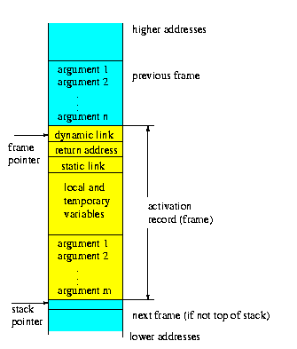
Before we create the frame for the callee, we need to allocate space
for the callee's arguments. These arguments belong to the caller's
frame, not to the callee's frame. There is a frame pointer (called
FP) that points to the beginning of the frame. The stack
pointer points to the first available byte in the stack immediately
after the end of the current frame (the most recent frame). There are
many variations to this theme. Some compilers use displays to
store the static chain instead of using static links in the stack. A
display is a register block where each pointer points to a consecutive
frame in the static chain of the current frame. This allows a very
fast access to the variables of deeply nested functions. Another
important variation is to pass arguments to functions using registers.
When a function (the caller) calls another function (the callee), it executes the following code before (the pre-call) and after (the post-call) the function call:
We can classify the variables in a program into four categories:
Every frame-resident variable (ie. a local variable) can be
viewed as a pair of (level,offset). The variable level indicates the
lexical level in which this variable is defined. For example, the
variables inside the top-level functions (which is the case for all
functions in C) have level=1. If a function is nested inside a
top-level function, then its variables have level=2, etc. The offset
indicates the relative distance from the beginning of the frame that
we can find the value of a variable local to this frame. For example,
to access the nth argument of the frame in the above figure, we
retrieve the stack value at the address FP+1, and to access the
first argument, we retrieve the stack value at the address FP+n
(assuming that each argument occupies one word). When we want to
access a variable whose level is different from the level of the
current frame (ie. a non-local variable), we subtract the level of the
variable from the current level to find out how many times we need to
follow the static link (ie. how deep we need to go in the static
chain) to find the frame for this variable. Then, after we locate the
frame of this variable, we use its offset to retrieve its value from
the stack. For example, to retrieve to value of x in the
Q frame, we follow the static link once (since the level of
x is 1 and the level of Q is 2) and we retrieve x
from the frame of P.
Another thing to consider is what exactly do we pass as arguments to the callee. There are two common ways of passing arguments: by value and by reference. When we pass an argument by reference, we actually pass the address of this argument. This address may be an address in the stack, if the argument is a frame-resident variable. A third type of passing arguments, which is not used anymore but it was used in Algol, is call by name. In that case we create a thunk inside the caller's code that behaves like a function and contains the code that evaluates the argument passed by name. Every time the callee wants to access the call-by-name argument, it calls the thunk to compute the value for the argument.
The following describes a function call abstraction for the MIPS architecture. This may be slightly different from the one you will use for the project.
MIPS uses the register $sp as the stack pointer and the
register $fp as the frame pointer. In the following MIPS code
we use both a dynamic link and a static link embedded in the
activation records.
Consider the previous program:
procedure P ( c: integer )
x: integer;
procedure Q ( a, b: integer )
i, j: integer;
begin
x := x+a+j;
end;
begin
Q(x,c);
end;
The activation record for P (as P sees it) is shown in the first figure below:
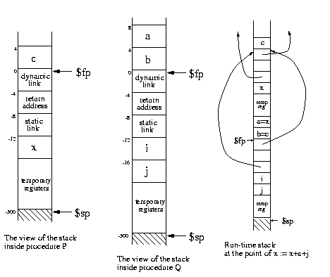
The activation record for Q (as Q sees it) is shown in the second figure above.
The third figure shows the structure of the run-time stack at the point where
x := x+a+j is executed. This statement uses x, which is defined
in P. We can't assume that Q called P, so we should not use
the dynamic link to retrieve x; instead, we need to use the static link,
which points to the most recent activation record of P.
Thus, the value of variable x is computed by:
lw $t0, -8($fp) # follow the static link of Q
lw $t1, -12($t0) # x has offset=-12 inside P
Function/procedure arguments are pushed in the stack before the function call.
If this is a function, then an empty placeholder (4 bytes) should be pushed in the stack
before the function call; this will hold the result of the function.
Each procedure/function should begin with the following code (prologue):
sw $fp, ($sp) # push old frame pointer (dynamic link)
move $fp, $sp # frame pointer now points to the top of stack
subu $sp, $sp, 500 # allocate say 500 bytes in the stack
# (for frame size = 500)
sw $ra, -4($fp) # save return address in frame
sw $v0, -8($fp) # save static link in frame
(where $v0 is set by the caller - see below) and should end with the following code (epilogue):
lw $ra, -4($fp) # restore return address
move $sp, $fp # pop frame
lw $fp, ($fp) # restore old frame pointer (follow dynamic link)
jr $ra # return
For each procedure call, you need to push the arguments into the stack
and set $v0 to be the right static link (very often it is equal
to the static link of the current procedure; otherwise,
you need to follow the static link a number of times).
For example, the call Q(x,c) in P is translated into:
lw $t0, -12($fp)
sw $t0, ($sp) # push x
subu $sp, $sp, 4
lw $t0, 4($fp)
sw $t0, ($sp) # push c
subu $sp, $sp, 4
move $v0, $fp # load static link in $v0
jal Q # call procedure Q
addu $sp, $sp, 8 # pop stack
Note that there are two different cases for setting the static link before a procedure call.
Lets say that caller_level and callee_level are the nesting
levels of the caller and the callee procedures (recall that the nesting
level of a top-level procedure is 0, while the nesting level of
a nested procedure embedded inside another procedure with nesting level l, is l + 1).
When the callee is lexically inside the caller's body, that is, when callee_level=caller_level+1, we have:
move $v0, $fpThe call
Q(x,c) in P is such a case because the nesting levels of P and Q
are 0 and 1, respectively.
Otherwise, we follow the static link of the caller d + 1 times, where d=caller_level-callee_level (the difference
between the nesting level of the caller from that of the callee). For d=0, that is, when both caller
and callee are at the same level, we have
lw $v0, -8($fp)For d=2 we have
lw $t1, -8($fp)
lw $t1, -8($t1)
lw $v0, -8($t1)
These cases are shown in the following figure:
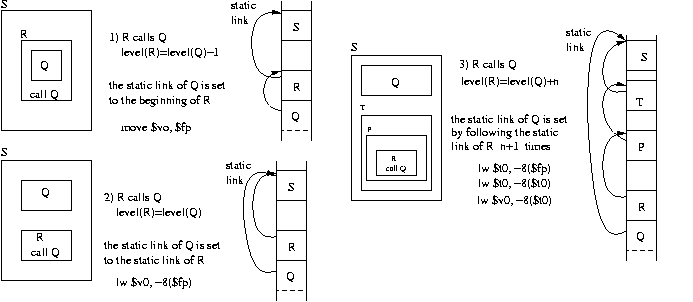
Note also that, if you have a call to a function, you need to allocate 4 more bytes in the stack to hold the result.
See the factorial example for a concrete example of a function expressed in MIPS code.
The semantic phase of a compiler first translates parse trees into an intermediate representation (IR), which is independent of the underlying computer architecture, and then generates machine code from the IRs. This makes the task of retargeting the compiler to another computer architecture easier to handle.
We will consider Tiger for a case study. For simplicity, all data are one word long (four bytes) in Tiger. For example, strings, arrays, and records, are stored in the heap and they are represented by one pointer (one word) that points to their heap location. We also assume that there is an infinite number of temporary registers (we will see later how to spill-out some temporary registers into the stack frames). The IR trees for Tiger are used for building expressions and statements. They are described in detail in Section 7.1 in the textbook. Here is a brief description of the meaning of the expression IRs:
MEM(BINOP(PLUS,TEMP(fp),CONST(24)))fetches a word from the stack located 24 bytes above the frame pointer.
CALL(NAME(g),ExpList(MEM(NAME(a)),ExpList(CONST(1),NULL)))represents the function call g(a,1).
MOVE(MEM(+(NAME(x),CONST(16))),CONST(1))computes x[4] := 1 (since 4*4bytes = 16 bytes).
In addition, when JUMP and CJUMP IRs are first constructed, the labels are not known in advance but they will be known later when they are defined. So the JUMP and CJUMP labels are first set to NULL and then later, when the labels are defined, the NULL values are changed to real addresses.
Local variables located in the stack are retrieved using an expression represented by the IR: MEM(+(TEMP(fp),CONST(offset))). If a variable is located in an outer static scope k levels lower than the current scope, the we retrieve the variable using the IR:
MEM(+(MEM(+(...MEM(+(MEM(+(TEMP(fp),CONST(static))),CONST(static))),...)),
CONST(offset)))
where static is the offset of the static link. That is, we follow the
static chain k times, and then we retrieve the variable using the
offset of the variable.
An l-value is the result of an expression that can occur on the left of an assignment statement. eg, x[f(a,6)].y is an l-value. It denotes a location where we can store a value. It is basically constructed by deriving the IR of the value and then dropping the outermost MEM call. For example, if the value is MEM(+(TEMP(fp),CONST(offset))), then the l-value is +(TEMP(fp),CONST(offset)).
In Tiger (the language described in the textbook), vectors start from index 0 and each vector element is 4 bytes long (one word), which may represent an integer or a pointer to some value. To retrieve the ith element of an array a, we use MEM(+(A,*(I,4))), where A is the address of a (eg. A is +(TEMP(fp),CONST(34))) and I is the value of i (eg. MEM(+(TEMP(fp),CONST(26)))). But this is not sufficient. The IR should check whether a < size(a): CJUMP(gt,I,CONST(size_of_A),MEM(+(A,*(I,4))),NAME(error_label)), that is, if i is out of bounds, we should raise an exception.
For records, we need to know the byte offset of each field (record
attribute) in the base record. Since every value is 4 bytes long, the
ith field of a structure a can be retrieved using
MEM(+(A,CONST(i*4))), where A is the address of a. Here i is
always a constant since we know the field name. For example, suppose
that i is located in the local frame with offset 24 and a is
located in the immediate outer scope and has offset 40. Then the
statement a[i+1].first := a[i].second+2
is translated into the IR:
MOVE(MEM(+(+(TEMP(fp),CONST(40)),
*(+(MEM(+(TEMP(fp),CONST(24))),
CONST(1)),
CONST(4)))),
+(MEM(+(+(+(TEMP(fp),CONST(40)),
*(MEM(+(TEMP(fp),CONST(24))),
CONST(4))),
CONST(4))),
CONST(2)))
since the offset of first is 0 and the offset of second is 4.
In Tiger, strings of size n are allocated in the heap in n + 4 consecutive bytes, where the first 4 bytes contain the size of the string. The string is simply a pointer to the first byte. String literals are statically allocated. For example, the MIPS code:
ls: .word 14
.ascii "example string"
binds the static variable ls into a string with 14 bytes.
Other languages, such as C, store a string of size n into a dynamically
allocated storage in the heap of size n + 1 bytes.
The last byte has a null value to indicate the end of string.
Then, you can allocate a string with address A of size n in the heap by adding n + 1 to
the global pointer ($gp in MIPS):
MOVE(A,ESEQ(MOVE(TEMP(gp),+(TEMP(gp),CONST(n+1))),TEMP(gp)))
Statements, such as for-loop and while-loop, are translated into IR statements that contain jumps and conditional jumps.
The while loop while c do body;
is evaluated in the following way:
loop: if c goto cont else goto done
cont: body
goto loop
done:
which corresponds to the following IR:
SEQ(LABEL(loop),
CJUMP(EQ,c,1,NAME(done),NAME(cont)),
LABEL(cont),
s,
JUMP(NAME(loop)),
LABEL(done))
The for statement for i:=lo to hi do body
is evaluated in the following way:
i := lo
j := hi
if i>j goto done
loop: body
i := i+1
if i<=j goto loop
done:
The break statement is translated into a JUMP. The compiler
keeps track which label to JUMP to on a ``break" statement by
maintaining a stack of labels that holds the ``done:" labels of the
for- or while-loop. When it compiles a loop, it pushes the label in
the stack, and when it exits a loop, it pops the stack. The
break statement is thus translated into a JUMP to the label at
the top of the stack.
A function call f(a1,...,an) is translated into the IR
CALL(NAME(l_f),[sl,e1,...,en]), where l_r is the label
of the first statement of the f code, sl is the static
link, and ei is the IR for ai. For example, if the
difference between the static levels of the caller and callee is one,
then sl is MEM(+(TEMP(fp),CONST(static))), where
static is the offset of the static link in a frame. That is, we
follow the static link once. The code generated for the body of the
function f is a sequence which contains the prolog, the code of
f, and the epilogue, as it was discussed in Section 7.
For example, suppose that records and vectors are implemented as pointers (i.e. memory addresses) to dynamically allocated data in the heap. Consider the following declarations:
struct { X: int, Y: int, Z: int } S; /* a record */
int i;
int V[10][10]; /* a vector of vectors */
where the variables S, i, and V are stored
in the current frame with offsets -16, -20, and -24 respectively.
By using the following abbreviations:
S = MEM(+(TEMP(fp),CONST(-16))) I = MEM(+(TEMP(fp),CONST(-20))) V = MEM(+(TEMP(fp),CONST(-24)))we have the following IR translations:
S.Z+S.X
--> +(MEM(+(S,CONST(8))),MEM(S))
if (i<10) then S.Y := i else i := i-1
--> SEQ(CJUMP(LT,I,CONST(10),trueL,falseL),
LABEL(trueL),
MOVE(MEM(+(S,CONST(4))),I),
JUMP(exit),
LABEL(falseL),
MOVE(I,-(I,CONST(1))),
JUMP(exit),
LABEL(exit))
V[i][i+1] := V[i][i]+1
--> MOVE(MEM(+(MEM(+(V,*(I,CONST(4)))),*(+(I,CONST(1)),CONST(4)))),
MEM(+(MEM(+(V,*(I,CONST(4)))),*(I,CONST(4)))))
for i:=0 to 9 do V[0][i] := i
--> SEQ(MOVE(I,CONST(0)),
MOVE(TEMP(t1),CONST(9)),
CJUMP(GT,I,TEMP(t1),done,loop),
LABEL(loop),
MOVE(MEM(+(MEM(V),*(I,CONST(4)))),I),
MOVE(I,+(I,CONST(1))),
CJUMP(LEQ,I,TEMP(t1),loop,done),
LABEL(done))
Many computer architectures have instructions that do not exactly
match the IR representations given in the previous sections. For
example, they do not support two-way branching as in
CJUMP(op,e1,e2,l1,l2). In addition, nested calls, such as
CALL(f,[CALL(g,[1])]), will cause interference between register
arguments and returned results. The nested SEQs, such as
SEQ(SEQ(s1,s2),s3), impose an order of a evaluation, which
restricts optimization (eg, if s1 and s2 do not
interfere with each other, we would like to be able to switch
SEQ(s1,s2) with SEQ(s2,s1) because it may result to a
more efficient program.
The problems mentioned above can be eliminated in two phases:
SEQ(MOVE(NAME(x),ESEQ(MOVE(TEMP(t),CONST(1)),TEMP(t))),
JUMP(ESEQ(MOVE(NAME(z),NAME(L)),NAME(z))))
is translated into:
SEQ(SEQ(MOVE(TEMP(t),CONST(1)),
MOVE(NAME(x),TEMP(t)))
SEQ(MOVE(NAME(z),NAME(L)),
JUMP(NAME(z))))
which corresponds to a list of statements (if we remove the top SEQs):
[ MOVE(TEMP(t),CONST(1)), MOVE(NAME(x),TEMP(t)), MOVE(NAME(z),NAME(L)), JUMP(NAME(z)) ]Here are some rules to make canonical trees:
CALL(f,a) = ESEQ(MOVE(TEMP(t),CALL(f,a)),TEMP(t))
That way expressions, such as +(CALL(f,a),CALL(g,b)), would not
rewrite each others result register.
Now the next thing to do is to transform any CJUMP into a CJUMP whose false target label is the next instruction after CJUMP. This reflects the conditional JUMP found in most architectures (ie. ``if condition then JUMP label"). To do so, we first form basic blocks from the IR tree. A basic block is a sequence of statements whose first statement is a LABEL, the last statement is a JUMP or CJUMP, and does not contain any other LABELs, JUMPs, or CJUMPs. That is, we can only enter at the beginning of a basic block and exit at the end. To solve the CJUMP problem, we first create the basic blocks for an IR tree and then we reorganize the basic blocks in such a way that every CJUMP at the end of a basic block is followed by a block the contains the CJUMP false target label. A secondary goal is to put the target of a JUMP immediately after the JUMP. That way, we can eliminate the JUMP (and maybe merge the two blocks). The algorithm is based on traces: You start a trace with an unmark block and you consider the target of the JUMP of this block or the false target block of its CJUMP. Then, if the new block is unmarked, you append the new block to the trace, you use it as your new start, and you apply the algorithm recursively; otherwise, you close this trace and you start a new trace by going back to a point where there was a CJUMP and you choose the true target this time. You continue until all blocks are marked. This is a greedy algorithm. At the end, there may be still some CJUMPs that have a false target that does not follow the CJUMP (this is the case where this false target label was the target of another JUMP or CJUMP found earlier in a trace). In that case:
After IR trees have been put into a canonical form (described in the
previous section), they are used in generating assembly code. The
obvious way to do this is to macroexpand each IR tree node. For
example, MOVE(MEM(+(TEMP(fp),CONST(10))),CONST(3))
is macroexpanded into the pseudo-assembly code at the right column:
TEMP(fp) t1 := fp CONST(10) t2 := 10 +(TEMP(fp),CONST(10)) t3 := t1+t2 CONST(3) t4 := 3 MOVE(MEM(...),CONST(3)) M[t3] := t4where ti stands for a temporary variable. This method generates very poor quality code. For example, the IR above can be done using only one instruction in most architectures:
M[fp+10] := 3.
A method, called maximum munch, generates better code, especially for RISC machines. The idea is to use tree pattern matching to map a tree pattern (a fragment of an IR tree) into a list of assembly instructions. These tree patterns are called tiles. For RISC we always have one-to-one mapping (one tile to one assembly instruction). Note that for RISC machines the tiles are small (very few number of IR nodes) but for CISC machines the tiles are usually large since the CISC instructions are very complex.
The following is the mapping of some tiles (left) into MIPS code (right):
CONST(c) li 'd0, c
+(e0,e1) add 'd0, 's0, 's1
+(e0,CONST(c)) add 'd0, 's0, c
*(e0,e1) mult 'd0, 's0, 's1
*(e0,CONST(2^k)) sll 'd0, 's0, k
MEM(e0) lw 'd0, ('s0)
MEM(+(e0,CONST(c))) lw 'd0, c('s0)
MOVE(MEM(e0),e1) sw 's1, ('s0)
MOVE(MEM(+(e0,CONST(c))),e1) sw 's1, c('s0)
JUMP(NAME(X)) b X
JUMP(e0) jr 's0
LABEL(X) X: nop
Here e0 and e1 are subtrees of these IR tree nodes. Most
of the assembly instructions above have one destination register
d0 and a number of source registers, s0 and
s1. So if a tree pattern, such as MOVE(MEM(e0),e1), has
two input subtrees e0 and e1, then their values are
taken from the source registers s0 and s1 (which are the
destinations of e0 and e1). The quote in the assembly
instructions is used to indicate that temporary registers should be
selected so that there is this match of source-destination names.
To translate an IR tree into assembly code, we perform a tiling:
we cover the IR tree with non-overlapping tiles.
We can see that there are many different tilings.
Consider for example the tiger statement a[i] := x, where
i is a temporary register, the a address is stored at the
offset 20, and x at the offset 10. The IR form is:
MOVE(MEM(+(MEM(+(fp,CONST(20))),*(TEMP(i),CONST(4)))),MEM(+(fp,CONST(10))))The following are two possible tilings of the IR:
lw r1, 20($fp) add r1, $fp, 20
sll r2, r1, 2 lw r1, (r1)
add r1, r1, r2 sll r2, r1, 2
lw r2, 10($fp) add r1, r1, r2
sw r2, (r1) add r2, $fp, x
lw r2, (r2)
sw r2, (r1)
The first tiling is obviously better since it can be executed faster.
It's highly desirable to do optimum tiling, ie, to generate the shortest instruction sequence (or alternatively the sequence with the fewest machine cycles). But this is not always easy to achieve. So most compilers do an optimal tiling where no two adjacent tiles can be combined into a tile of lower cost. Optimum tiling is not always optimal but it's close for RISC machines.
There are two main ways of performing optimum tiling: using maximal munch (a greedy algorithm) or using dynamic programming. In maximal munch you start from the IR root and from all matching tiles you select the one with the maximum number of IR nodes (largest tile). Then you go to the children (subtrees) of this tile and apply the algorithm recursively until you reach the tree leaves. The dynamic programming works from the leaves to the root. It assigns a cost to every tree node by considering every tile that matches the node and calculating the minimum value of:
For example, consider the following IR represented as a tree and its tiling using maximal munch:
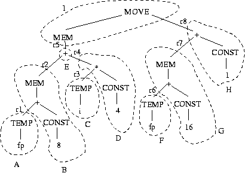
The order of tiling is IEHBDGACF (ie, top-down).
After we set the tiles, we use a different register ri for each connection
between the tiles. Then we expand the tiles into MIPS code by following the tile mapping table.
The order of tile expansion is ABCDEFGHI (ie, bottom-up).
The MIPS code is:
A lw r1, fp B lw r2, 8(r1) C lw r3, i D sll r4, r3, 2 E add r5, r2, r4 F lw r6, fp G lw r7, 16(r6) H add r8, r7, 1 I sw r8, (r5)
When we generated IR trees, we assumed that we have a very large number of temporary variables stored in registers. Of course this is not true for real machines. In particular CISC machines have very few registers (Pentium has 6 general registers only). So it's highly desirable to use one machine register for multiple temporary variables (instead of using one register for one temporary variable). Consider this program:
1. a := 0 2. L1: b := a+1 3. c := c+b 4. a := b*2 5. if a<10 goto L1 6. return cObviously we need a maximum of three registers, one for each variable
a, b, and c. But we can do better if we use
two registers: one for c and one for both a and
b. This is possible because after a+1 is computed in statement 2 and during statements 3 and 4, the
value of a is not used, and these are the only places where
b is used. We say that variables a and b do not
interfere if they are not live during the same periods in
the program. In that case, they can occupy the same
register. A variable x is live at a particular point
(statement) in a program, if it holds a value that may be needed in
the future. That is, x is live at a particular point if there is a path
(possibly following gotos) from this point to a statement that uses x and
there is no assignment to x in any statement in the path
(because if there was an assignment to x, the old value of
x is discarded before it is used). For example, a is
live in 2 (because it's the place where it is used), not live in 3 and 4
(because it is assigned a value in 4 before it is used in 5), and live
again in 5. Variable b is live in 3 and 4 only, and variable
c is live in 2, 3, 4, 5, and 6 (it's live in 2 because there is a path
to 3 where it is used). In general, let's say that you have a use
of a variable v in line n:
k. v := ...
...
n. x := ... v ..
(Here v is used in the source of an assignment but it may have also been
used in a function call, return statement, etc.) We try to find an
assignment v := ... such that there is path from this statement
to line n and there is no other assignment to v
along this path. In that case, we say that v is live
along this path (immediately after the asignment until and
including line n). We do that for every use of v
and the union of all these regions in which v is live gives
us the life of v. In our example, the life of variables are:
| a | b | c | |
| 1 | X | ||
| 2 | X | X | |
| 3 | X | X | |
| 4 | X | X | |
| 5 | X | X | |
| 6 | X |
Let's formalize the liveness of a variable. The first thing to do is to construct the control flow graph (CFG) of a program. The CFG nodes are individual statements (or maybe basic blocks) and the graph edges represent potential flow of control. The outgoing edges of a node n are succ[n] and the ingoing edges are pred[n]. For example, succ[5] = [6, 2] and pred[5] = [4]. For each CFG node n (a statement) we define use[n] to be all the variables used (read) in this statement and def[n] all the variables assigned a value (written) in this statement. For example, use[3] = [b, c] and def[3] = [c].
We say that variable v is live at a statement n if there is a path
in the CFG from this statement to a statement m such that
v use[m] and for each
n k < m : v 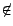def[k]. That is, there
is no assignment to v in the path from n to m. For example,
c is alive in 4 since it is used in 6 and there is no
assignment to c in the path from 4 to 6.
The liveness analysis analyzes a CFG to determine which places variables are live or not. It is a data flow analysis since it flows around the edges of the CFG information about variables (in this case information about the liveness of variables). For each CFG node n we derive two sets: in[n] (live-in) and out[n] (live-out). The set in[n] gives all variables that are live before the execution of statement n and out[n] gives all variables that are live after the execution of statement n. So the goal here is to compute these sets from the sets succ, use and def. To do this, we consider the properties of in and out:
| 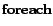 n : in[n] 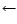 ;out[n] |
| n : |
| in'[n] in[n] |
| out'[n] out[n] |
| in[n] use[n] (out[n] - def[n]) |
| out[n] 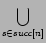in[s] |
| 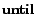 in' = in 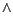 out' = out |
The life of a variable can be directly derived from vector in:
if
v in[n] then v is live on line n.
Then, from the variable lifes we can compute the interference graph.
The nodes of this graph are the program variables and for
each node v and w there is an interference edge if the lives of
the variables v and w overlap in at least one program point (statement). For each CFG
node n that assigns the value to the variable a (ie,
a def[n]) we add the edges
(a, b1), (a, b2),...,(a, bm), where
out[n] = {b1, b2,..., bm}. There is a special case when n is a
move command:
a c; in that case we do not add the edge
(a, bk) if bk = c. For example, the previous program
has an interference graph with three nodes: a, b, and c,
and two edges: a-c and b-c.
The following is a larger example:
| x | y | z | w | u | v | ||
| 1. | v := 1 | ||||||
| 2. | z := v+1 | X | |||||
| 3. | x := z * v | X | X | ||||
| 4. | y := x * 2 | X | X | ||||
| 5. | w := x+z * y | X | X | X | |||
| 6. | u := z+2 | X | X | X | |||
| 7. | v := u+w+y | X | X | X | |||
| 8. | return v * u | X | X |
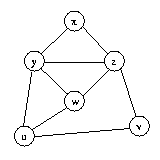
The interference graph is used for assigning registers to temporary variables. If two variables do not interfere (ie, there is no edge between these two variables in the interference graph) then we can use the same register for both of them, thus reducing the number of registers needed. On the other hand, if there is a graph edge between two variables, then we should not assign the same register to them since this register needs to hold the values of both variable at one point of time (because the lives of these variables overlap at one point of time - this is what interference means).
Suppose that we have n available registers: r1, r2,..., rn. If we view each register as a different color, then the register allocation problem for the interference graph is equivalent to the graph coloring problem where we try to assign one of the n different colors to graph nodes so that no two adjacent nodes have the same color. This algorithm is used in map drawing where we have countries or states on the map and we want to color them using a small fixed number of colors so that states that have a common border are not painted with the same color. The graph in this case has one node for each state and an edge between two states if they have common borders.
The register allocation algorithm uses a stack of graph nodes to insert all nodes of the interference graph one at a time. Each time it selects a node that has fewer than n neighbors (adjacent nodes). The idea is that if we can color the graph after we remove this node, then of course we can color the original graph (with the node included) because the neighbors of this node can have n - 1 different colors in the worst case; so we can just assign the available nth color to the node. This is called simplification of the graph. Each selected node is pushed in the stack. Sometimes though we cannot simplify any further because all nodes have n or more neighbors. In that case we select one node (ie. variable) to be spilled into memory instead of assigning a register to it. This is called spilling and the spilled victim can be selected based on priorities (eg. which variable is used less frequently, is it outside a loop, etc). The spilled node is also pushed on the stack. When the graph is completely reduced (and all nodes have been pushed in the stack), we pop the stack one node at a time, we rebuild the interference graph and at the same time we assign a color to the popped-out node so that its color is different from the colors of its neighbors. This is called the selection phase. If we can't assign a color to a node, we spill out the node into memory (a node selected to be spilled out during the spill phase does not necessarily mean that it will actually spilled into memory at the end). If there are spilled nodes, we use a memory access for each spilled variable (eg. we use the frame location $fp-24 to store the spilled temporary variable and we replace all occurrences of this variable in the program with M[$fp-24]). Then we restart the whole process (the building of the interference graph, simplification, etc) from the beginning. Figures 11.1-11.3 in Section 11.1 in the textbook give an example of this method.
Consider the following interference graph from the previous section:
The nodes are pushed in the stack in the order of xvuzyw. Then, at the selection phase, xyzwuv variables are assigned the registers R0R2R1R0R1R0.
If there is a move instruction in a program (ie. an assignment of the
form a:=b) and there is no conflict between a and
b, then it is a good idea to use the same register for both
a and b so that you can remove the move instruction
entirely from the program. In fact you can just merge the graph nodes
for a and b in the graph into one node. That way nodes
are now labeled by sets of variables, instead of just one variable.
This is called coalescing. This is a good thing to do since it
reduces the number of registers needed and it removes the move
instructions, but it may be bad since it increases the number of
neighbors of the merged nodes, which may lead to an irreducible graph
and a potential spilling. To do this, we add another phase to the
register allocation algorithm, called coalescing, that coalesces
move related nodes. If we derive an irreducible graph at some point
of time, there is another phase, called freezing, that
de-coalesces one node (into two nodes) and continues the
simplification.
A common criterion for coalescing is that we coalesce two nodes if the merged node has fewer than n neighbors of degree greater than or equal to n (where n is the number of available registers). This is called the Briggs criterion. A slight variation of this is the George criterion where we coalesce nodes if all the neighbors of one of the nodes with degree greater than or equal to n already interfere with the other node.
Coalescing is very useful when handling callee-save registers in a
program. Recall that callee-save registers need to be saved by the
callee procedure to maintain their values upon the exit of the
procedure. Suppose that r3 is a callee-save register. The
procedure needs to save this register into a temporary variable at the
beginning of the procedure (eg. a := r3) and to restore it at
the end of the procedure (ie. r3 := a). That way, if r3
is not used at all during the procedure body, it will be coalesced
with a and the move instructions will be removed. But
coalescing can happen in many other different situations as long as
there is no interference, which makes this technique very general. Note
that registers in a program are handled as temporary variables with a
preassigned color (precolored nodes). This means that precolored nodes
can only be coalesced with other nodes (they cannot be simplified or
spilled). See the example in Section 11.3 in the textbook for a program with precolored
nodes.
Suppose that you want generate assembly code for complex expression trees using the fewest number of registers to store intermediate results. Suppose also that we have two-address instructions of the form
op Ri, Twhere op is an operation (add, sub, mult, etc), Ri is a register (R1, R2, R3, etc), and T is an address mode such as a memory reference, a register, indirect access, indexing etc. We also have a move instruction of the form:
load Ri, TFor example, for the expression
(A-B)+((C+D)+(E*F)), which
corresponds to the AST:
+
/ \
/ \
- +
/ \ / \
A B + *
/ \ / \
C D E F
we want to generate the following assembly code:
load R2, C add R2, D load R1, E mult R1, F add R2, R1 load R1, A sub R1, B add R1, R2That is, we used only two register.
There is an algorithm that generates code with the least number of
registers. It is called the Sethi-Ullman algorithm. It consists
of two phases: numbering and code generation. The
numbering phase assigns a number to each tree node that indicates how
many registers are needed to evaluate the subtree of this node.
Suppose that for a tree node T, we need l registers to evaluate
its left subtree and r registers to evaluate its right subtree.
Then if one of these numbers is larger, say l > r, then we can
evaluate the left subtree first and store its result into one of the
registers, say Rk. Now we can evaluate the right subtree using the
same registers we used for the left subtree, except of course Rk
since we want to remember the result of the left subtree. But this is
always possible since l > r. This means that we need l registers to
evaluate T too. The same happens if r > l but now we need to
evaluate the right subtree first and store the result to a register.
If l = r we need an extra register Rl+1 to remember the result of
the left subtree. If T is a tree leaf, then the number of registers
to evaluate T is either 1 or 0 depending whether T is a left or a
right subtree (since an operation such as add R1, A can handle
the right component A directly without storing it into a
register). So the numbering algorithm starts from the tree leaves and
assigns 1 or 0 as explained. Then for each node whose children are
labeled l and r, if l = r then the node number is l + 1 otherwise
it is max(l, r). For example, we have the following numbering for the
previous example:
2
/ \
/ \
1 2
/ \ / \
1 0 1 1
/ \ / \
1 0 1 0
The code generation phase is as follows. We assume that for each node
T has numbering regs(T). We use a stack of available registers
which initially contains all the registers in order (with the lower
register at the top).
| generate(T) = | ||
| if T is a leaf write ``load top(), T" | ||
| if T is an internal node with children l and r then | ||
| if regs(r) = 0 then { generate(l); write ``op top(), r" } | ||
| if regs(l ) > = regs(r) | ||
| then { | generate(l) | |
| R := pop() | ||
| generate(r) | ||
| write ``op R, top()" | ||
| push(R) } | ||
| if regs(l ) < regs(r) | ||
| then { | swap the top two elements of the stack | |
| generate(r) | ||
| R := pop() | ||
| generate(l) | ||
| write ``op top(), R" | ||
| push(R) | ||
| swap the top two elements of the stack } | ||
This assumes that the number of registers needed is no greater than the number of available registers. Otherwise, we need to spill the intermediate result of a node to memory. This algorithm also does not take advantage of the commutativity and associativity properties of operators to rearrange the expression tree.
Consider a typical storage organization of a program:
All dynamically allocated data are stored in the heap.
These are the data created by malloc in C or new in C++.
You can imagine the heap as a vector of bytes (characters) and end_of_heap
a pointer to the first available byte in the heap:
char heap[heap_size]; int end_of_heap = 0;A trivial implementation of
malloc in C is:
void* malloc ( int size ) {
void* loc = (void*) &heap[end_of_heap];
end_of_heap += size;
return loc;
};
If you always create dynamic structures but never delete them,
you will eventually run out of heap space. In that case, malloc
will request the operating system for more heap (this code is not shown). This is very expensive,
because it may require to move the stack data to higher memory locations.
Alternatively, you can recycle the dynamically allocated data that you don't use.
This is done using free in C or delete in C++.
To do so, you need to link all deallocated data in the heap into a list:
typedef struct Header { struct Header *next; int size; } Header;
Header* free_list;
Initially, the free list contains only one element that covers the entire heap
(ie, it's heap_size bytes long):
void initialize_heap () {
free_list = (Header*) heap;
free_list->next = 0;
free_list->size = heap_size;
};
(This is terrible C code, but this can only be done by coercing bytes to pointers.)
Note that each cell in the heap has a Header component (ie, a next
pointer and a size) followed by size-sizeof(Header) bytes (so that is size bytes long).
malloc first searches the free list to find a cell large enough to fit the given number of bytes.
If it finds one, it gets a chunk out of the cell leaving the rest untouched:
void* malloc ( int size ) {
Header* prev = free_list;
for(Header* r=free_list; r!=0; prev=r, r=r->next)
if (r->size > size+sizeof(Header))
{ Header* new_r = (Header*) (((char*) r)+size);
new_r->next = r->next;
new_r->size = r->size;
if (prev==free_list)
free_list = new_r;
else prev->next = new_r;
return (void*) r;
};
void* loc = (void*) &heap[end_of_heap];
end_of_heap += size;
return loc;
};
free simply puts the recycled cell at the beginning of the free list:
void free ( void* x ) {
if ("size of *x" <= sizeof(Header))
return;
((Header*) x)->next = free_list;
((Header*) x)->size = "size of *x";
free_list = (Header*) x;
};
We can see that there is a lot of overhead in malloc since the
free list may be very long. The most important problem though is
fragmentation of the heap into tiny cells, so that even though the
total free space in the free list is plenty, it is useless for large
object allocation. The reason for fragmentation is that we
unrestrictedly choose a cell from the free list to do allocation. It
makes more sense to try to find a free cell that provides the requested
number of bytes exactly. This can be done by maintaining a vector of
free lists, so that the nth element of the vector is a free list that
links all the free cells of size n.
The above malloc/free way of allocating dynamic cells is called a manual memory allocation since the programmer is responsible for allocating and deleting objects explicitly. This is to be contrasted to the automatic memory management, in which the system manages the dynamic allocation automatically. Manual memory management is the source of the worst and hardest to find bugs. It's also the source of most of the mysterious program crashes. It takes the fun out of programming. It causes horrible memory problems due to ``overflow", ``fence past errors", ``memory corruption", ``step-on-others-toe" (hurting other variable's memory locations) or ``memory leaks". The memory problems are extremely hard to debug and are very time consuming to fix and troubleshoot. Memory problems bring down the productivity of programmers. Memory related bugs are very tough to crack, and even experienced programmers take several days or weeks to debug memory related problems. Memory bugs may be hidden inside the code for several months and can cause unexpected program crashes. It is estimated that the memory bugs due to usage of char* and pointers in C/C++ is costing $2 billions every year in time lost due to debugging and downtime of programs. Now of course all modern languages (Java, SML, Haskell, etc) use automatic garbage collection. Despite that, C and C++ are still popular and programmers spend most of their time trying to do manual memory allocation (and then, after they remove most core dumps from their program, they port it to a different architecture and their program crashes!).
Why manual memory management is so hard to do correctly? Basically,
you need to have a global view of how dynamic instances of a type are
created and passed around. This destroys the good software engineering
principle that programs should be developed in small independent
components. The problem is to keep track of pointer assignments. If
more than one objects point to a dynamically allocated object, then
the latter object should be deleted only if all objects that point to
it do not need it anymore. So basically, you need to keep track of
how many pointers are pointing to each object. This is called reference counting and used to be popular for OO languages like C++.
We do not call this method automatic garbage collection because the
programmer again is responsible of putting counters to every object to
count references. This method is easy to implement for languages like
C++ where you can redefine the assignment operator dest=source,
when both dest and source are pointers to data.
Instead of using C* for a pointer to an object C,
we use Ref<C>, where the template Ref provides
reference counting to C:
template< class T >
class Ref {
private:
int count;
T* pointer;
void MayDelete () { if (count==0) delete pointer; };
void Copy ( const Ref &sp ) {
++sp.count;
count = sp.count;
pointer = sp.pointer;
};
public:
Ref ( T* ptr = 0 ) : count(1), pointer(ptr) {};
Ref ( const Ref &sp ) { Copy(sp); };
~Ref () { MayDelete(); };
T* operator-> () { return pointer; };
Ref& operator= ( const Ref &sp ) {
if (this != &sp) {
count--;
MayDelete();
Copy(sp);
};
return *this;
};
};
When an instance of Ref<C> is created, its counter is set to 1.
When we delete the object, we just decrement the counter because there
may be other objects pointing to it. But when the counter becomes
zero, we delete it. The only way to move pointers around, is through
an assignment from a C* object to a C* object. In that
case, the object pointed by the source pointer will have one pointer
more, while the object pointed by the destination pointer will have
one pointer less. Reference counting avoids some misuses of the heap
but it comes with a high cost: every assignment takes many cycles to
be completed and some of the work may be unnecessary since you may
pass a pointer around causing many unnecessary counter
increments/decrements. In addition, we cannot get rid of cyclic
objects (eg. when A points to B and B points to A) using reference
counting. All objects that participate in a cyclic chain of references
will always have their counters greater than zero, so they will never
be deleted, even if they are garbage.
Heap-allocated records that are not reachable by any chain of pointers from program variables are considered garbage. All other data are 'live'. This is a very conservative approach but is always safe since you can never access unreachable data. On the other hand, it may keep objects that, even though reachable, they will never be accessed by the program in the future.
With automatic storage management, user programs do not reclaim memory manually. When the heap is full, the run-time system suspends the program and starts garbage collection. When the garbage collection is done, the user program resumes execution:
char heap[heap_size];
int end_of_heap = 0;
void* malloc ( int size ) {
if (size+end_of_heap > heap_size)
GC(); // garbage collection
void* loc = (void*) &heap[end_of_heap];
end_of_heap += size;
return loc;
};
Here too we use the conservative approximation that if we can reach an object by following pointers from program variables, then the object is live (not garbage). These program variables are called roots and can be either frame-allocated or static. Therefore, the garbage collector needs to check the entire static section as well as all frames in the run-time stack for pointers to heap. It is common to use the following conservative approach: if a word has a value between the minimum and maximum address of the heap, then it is considered to be a pointer to the heap. An object is live if it is pointed by either a root or by a live object (this is a recursive definition). The garbage collector needs to start from each root and follow pointers recursively to mark all live objects.
A Mark-and-Sweep garbage collector has two phases:
The depth-first-search is done using the function
DFS ( p ) =
{ if *p record is unmarked
then mark *p
for each pointer p->fi of the record *p do DFS(p->fi)
}
which is called from every root:
for each p in roots DFS(p)
The mark phase is:
p = 'first object in the heap'
while p is in the heap do
{ if *p is marked
then unmark *p
else insert *p into the free list
p = p+(size of record *p)
}
For example, consider the following objects in memory at the time the garbage collector takes over:
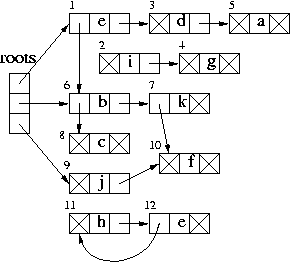
The roots can be static or frame-allocated variables. Let's assume that these objects are represented as follows in memory (as consecutive bytes):
| 1 | 6 | e | 3 |
| 2 | 0 | i | 4 |
| 3 | 0 | d | 5 |
| 4 | 0 | g | 0 |
| 5 | 0 | a | 0 |
| 6 | 8 | b | 7 |
| 7 | 10 | k | 0 |
| 8 | 0 | c | 0 |
| 9 | 0 | j | 10 |
| 10 | 0 | f | 0 |
| 11 | 0 | h | 12 |
| 12 | 11 | l | 0 |
After the mark-and-sweep garbage collection, the memory layout becomes:
| 1 | 6 | e | 3 |
| 2 | 0 | ||
| 3 | 0 | d | 5 |
| 4 | 2 | ||
| 5 | 0 | a | 0 |
| 6 | 8 | b | 7 |
| 7 | 10 | k | 0 |
| 8 | 0 | c | 0 |
| 9 | 0 | j | 10 |
| 10 | 0 | f | 0 |
| 11 | 4 | ||
| 12 | 11 |
A copying garbage collector uses two heaps:
Converting a pointer p that points to a from-space into a
pointer that points to the to-space space, is called forwarding a
pointer:
forward (p) {
if p points t from-space
then if p.f1 points to to-space
then return p.f1
else for each field fi of p
next.fi := p.fi
p.f1 := next
next := next + (size of *p)
return p.f1
else return p
Forwarding pointers can be done in breadth-first-search, using Cheney's Algorithm. Compared to depth-first-search, breadth-first-search has better locality of reference:
scan := begin-of-to-space
next := scan
for each root r
r := forward(r)
while scan < next
for each field fi of *scan
scan.fi := forward(scan.fi)
scan := scan + (size of *scan)
Cheney's Algorithm uses a very simple allocation algorithm and has no need for stack (since is not recursive). More importantly, its run time depends on the number of live objects, not on the heap size. Furthermore, it does not suffer from data fragmentation, resulting into a more compact memory. In addition, it allows incremental (concurrent) garbage collection. On the other hand, it needs double the amount of memory and needs to recognize all pointers to heap.
For example,
roots
|
from-space |
to-space |
roots
|
from-space |
to-space |
roots
|
from-space |
to-space |
roots
|
from-space |
to-space |
roots
|
from-space |
to-space |
roots
|
from-space |
to-space |
roots
|
from-space |
to-space |
roots
|
from-space |
to-space |
For further reading, look at:
There is an excellent mark and sweep garbage collector for C and C++ programs. It is called gc (http://www.hpl.hp.com/personal/Hans_Boehm/gc/).